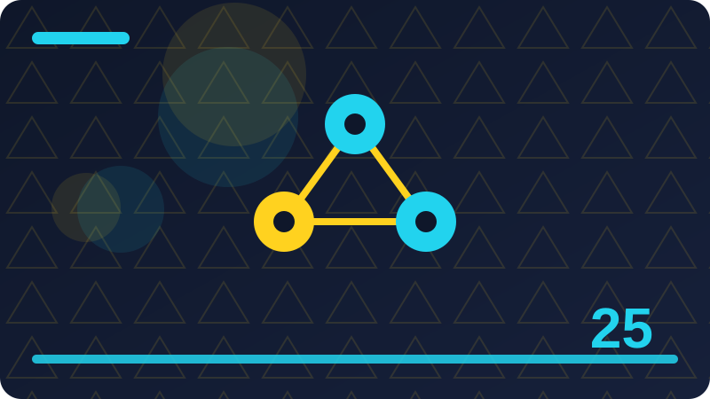

Chapter 25: AI Safety Basics in Plain Words

Section 1: Safety in Plain Words
Safety, in plain words, means building AI tools that help people without harming them. It is the foundation of everything this book has taught, from honest evaluation in Chapter 21, through hallucination checking in Chapter 22, fairness in Chapter 23, and data safety in Chapter 24. A tool that is accurate, fair, and private, but still causes harm through careless actions, misleading outputs, or unchecked trust, is not safe, however clever its technology may be. Safety is not a single feature added at the end of a project. It is a way of thinking about a tool's whole life, from its purpose, through its data, outputs, and actions, to its users, failures, and long-term effects.
Safety begins with a simple question, asked before building and repeated at every stage: "who could this tool harm, how, and what can I do to reduce that harm?" That question reveals risks that technical testing alone may miss, such as a summariser misleading a user who trusts it blindly, an agent deleting files it should not touch, or a search tool surfacing private information to the wrong person. Each is a safety failure, even if the code ran without errors, because safety is judged by effects on people, not by whether code ran correctly. A tool that runs perfectly while harming users has failed its most important test, however well it passed its technical tests.
Safety also means humility about AI's limits, as in Chapters 21 and 22. AI tools can be wrong, can hallucinate, can be biased, and can be manipulated. Builders who acknowledge those limits, and design for them through checking, oversight, and safe defaults, build safer tools than builders who assume reliability and design no checks at all. Those unchecked tools leave users exposed to inevitable mistakes, without protection, when mistakes occur, as they surely will, given enough use, enough users, and enough edge cases, which no amount of testing can fully eliminate, however thorough that testing may be.
Finally, safety in this chapter is taught for the reader's own local tools, using only standard library Python and the reader's own files, with no external calls, no live systems, and no bypass content. Safety is best learned by practising on tools the reader controls, where mistakes are safe to make and learn from, rather than by experimenting on live systems, other people's data, or other people's tools, where mistakes cause real harm. The habits in this chapter, checking before acting, keeping humans in control, using safe defaults, testing for harm, and responding honestly to failures, apply to every AI tool, large or small, and are worth building now, while tools are small, local, and easy to change. Safety also grows when a builder writes down the main risks for a tool before sharing it with anyone else.
print("Safety question: who could this tool harm, how, and how can I reduce that harm?")Check: What does AI safety mean in plain words, and why is it judged by effects on people, not just by whether code runs correctly?
Section 2: What AI Safety Means
AI safety means, in practical terms, that a tool's benefits outweigh its harms, for its users and for others affected by it, and that its builders have taken reasonable care to reduce foreseeable harms, even when those harms are unlikely. Unlikely harms, multiplied by many users over a long time, become likely. A rare failure, occurring once in a thousand uses, will occur many times once a tool is used thousands of times, by many people, for purposes the builder never anticipated. Safety thinking must therefore consider scale from the start, not just the first few uses by the builder, on familiar data, in controlled conditions, which are the least risky uses a tool will ever see.
AI safety has several parts, covered in this chapter, which together form a complete practice, rather than a single technique. No single technique can make a tool safe, however well applied. Safety requires layers, as in Chapter 24's defence in depth, where each layer catches failures that previous layers missed, so a tool remains safe even when one layer fails, which it eventually will. Those parts include accuracy and honesty, as in Chapters 21 and 22, fairness, as in Chapter 23, privacy, as in Chapter 24, oversight, as in Section 8, safe defaults, as in Section 13, testing, as in Section 15, and honest response to failures, as in Section 38. A builder practising only one part, while neglecting others, has built a partially safe tool, which may still harm users through the neglected parts.
AI safety also means respecting users' autonomy, meaning their ability to understand, check, and control the tools they use, rather than being manipulated, misled, or overruled by those tools. A tool that makes decisions for users, without explaining them, without allowing correction, or without allowing refusal, undermines users' control over their own work, data, and decisions. That is itself a harm, even when the tool's decisions are correct, because correct decisions, imposed without understanding or consent, still reduce autonomy. Users who lose autonomy over time become dependent on tools they cannot check, which makes them vulnerable when those tools eventually fail, as they will.
Finally, AI safety means taking responsibility, as in Section 28, for a tool's foreseeable effects, rather than blaming users for trusting the tool, blaming data for being biased, or blaming the AI itself, as if it had its own intentions, which it does not. AI tools in this book are programs written by builders, using data chosen by builders, with defaults set by builders. Their effects, good or bad, are therefore builders' responsibility, to anticipate, reduce, and respond to honestly, when they occur. That is a demanding standard, but a fair one, because builders are best placed to understand a tool's risks and reduce them, before users are harmed.
safety_parts = ["accuracy", "fairness", "privacy", "oversight", "safe defaults", "testing", "honest response"]
print(safety_parts)Check: What are the main parts of AI safety, and why does safety require layers rather than a single technique?
Section 3: Why Safety Matters for Builders
Safety matters for builders, first, because their tools affect real people, in real ways, even when those tools are small, local, and seemingly harmless. A local summariser that misleads a user about a medical note, a legal deadline, or a financial decision can cause real harm, even though it never left the user's machine, and even though its builder never intended harm. Harm is judged by effects, as in Section 1, not by intentions. Builders who dismiss small tools as too small to matter will miss harms those tools can cause, at scale, over time, to users who trust them for important decisions. Users adopt tools they find useful, for tasks they care about, and those tasks, by definition, matter to them, however small they may seem to the builder.
Safety also matters practically, because unsafe tools lose users, lose trust, and lose longevity, as in Chapter 24's trust discussion, applied to safety. A tool that causes harm, or is found unsafe, will be abandoned by users, criticised by reviewers, and avoided by collaborators, however useful its outputs may have been, before its harm was discovered. Users, once harmed, or once aware of harm, will not trust a tool again easily. Trust, once lost through safety failure, is far harder to rebuild than it is to build initially, through careful safety work. Investing in safety early, when tools are small and fixes are cheap, is far more efficient than fixing failures later, when tools are large, users are many, and harm has already occurred.
Safety matters, third, because builders are learners, as well as makers, and safety thinking improves building in general. Asking "who could this harm, how, and how can I reduce it?" forces builders to think clearly about purpose, users, failure, and effects, which are the same questions that improve accuracy, fairness, and privacy, as in Chapters 21 to 24. A builder who asks that question will design better tools, not just safer ones, by clarifying purpose, simplifying features, improving checking, and documenting limits. A tool whose purpose is clear, whose limits are stated, and whose outputs can be checked, is easier to use, easier to trust, and easier to improve, than a tool whose purpose is vague, whose limits are hidden, and whose outputs cannot be checked.
Finally, safety matters because builders are part of a community, and the safety of AI tools, in aggregate, affects public trust in AI itself. That trust affects whether AI tools, in general, are adopted, regulated, or rejected, which in turn affects builders' future work, and users' future access to helpful AI tools. Each unsafe tool, widely shared, contributes to public distrust, while each safe tool, honestly documented and responsibly built, contributes to public trust. That trust is a shared resource, that builders should protect, through their own work, as in Chapter 24's culture discussion, applied to safety, where individual habits, aggregated across many builders, create a culture of safety, or a culture of carelessness, depending on what each builder chooses, in their own small projects.
print("Safety matters: real effects on people, trust and longevity, better building, and public trust in AI.")Check: Why does safety matter for builders even when their tools are small and local, and how does it affect trust and longevity?
Section 4: Harm in Plain Words
Harm, in plain words, means making someone's situation worse, in a way that matters to them. AI tools can cause harm in many ways, not only through dramatic failures, such as deleting files, or sharing private data, but also through quiet, cumulative harms, such as misleading a user repeatedly, reinforcing a bias, wasting time, or undermining confidence. Each, repeated over time, can have serious effects, even though no single instance seems dramatic. Safety thinking must therefore consider cumulative harm, as well as dramatic harm, and ask, not just "could this tool cause a disaster?" but also "could this tool, used daily, by many people, gradually mislead, bias, or burden them, in ways that add up to serious harm, over time?" That perspective is essential, because AI tools are often used repeatedly, for similar tasks, multiplying small harms into large ones.
Harm can be direct, such as an agent deleting a file, a summariser inventing a deadline, or a search tool revealing private information, or indirect, such as a tool leading a user to make a poor decision, based on misleading output. That indirect harm, caused through the user's own action, is nevertheless partly the tool's responsibility, as in Section 28, because its output was a foreseeable cause of the user's action, even though the user, not the tool, took the final step. Builders defining harm narrowly, as only direct actions by the tool itself, will miss indirect harms, often the most common AI harms, arising from users trusting misleading outputs, for decisions that matter, as in Chapters 21 and 22, where evaluation and hallucination checking are safety practices, precisely because misleading outputs cause indirect harm, through user decisions.
Harm can also be to groups, not just individuals, as in Chapter 23, where a tool systematically underperforming for one group, or reinforcing stereotypes about a group, harms that group, even if no individual instance seems dramatic. Systematic underperformance, over time, disadvantages the group, in education, employment, or access to services, depending on purpose. Group harm, like cumulative harm, is easy to overlook, when builders test only on average performance, as in Chapter 21, without breakdowns, as in Chapter 23, revealing group differences, that average performance hides. Safety testing, as in Section 15, must therefore include breakdowns, by relevant groups, where appropriate, and consider group harm, as well as individual harm, from the start, not as an afterthought, when group harm is discovered, after deployment, by affected users.
Finally, harm can be to autonomy, as in Section 2, to privacy, as in Chapter 24, to fairness, as in Chapter 23, or to trust, as in Section 3, each a real harm, even when no financial loss, physical injury, or dramatic failure occurs. Autonomy, privacy, fairness, and trust are valuable in themselves, and their loss, over time, degrades users' ability to control their own lives, data, and decisions, a serious harm, however quiet it may seem, compared to dramatic harms, attracting more attention, but not the only harms that matter. Safety thinking must therefore be broad, considering all kinds of harm, direct and indirect, individual and group, dramatic and cumulative, financial and non-financial, because a narrow definition will miss real harms, and builders, with a broader definition, could have prevented, or reduced, them, through careful design, checking, and oversight.
harms = ["direct", "indirect", "individual", "group", "cumulative", "autonomy", "privacy"]
print(harms)Check: What kinds of harm can AI tools cause, beyond dramatic failures, and why must safety thinking consider cumulative and group harm?
Section 5: Who Can Be Harmed
Who can be harmed by an AI tool is broader than "who uses it?" because a tool's effects extend beyond direct users, to people mentioned in its data, people affected by its outputs, people in groups it treats unfairly, and people in communities where it is deployed. Each can be harmed, even though they never used the tool, never consented to its use, and may never know that the tool affected them. Safety thinking, as in Section 1, must therefore ask "who could this harm?" broadly, not just "who uses this?" narrowly, because a narrow question will miss affected non-users, whose harm is nevertheless real, and whose protection is nevertheless builders' responsibility, as in Section 28, because builders designing a tool are best placed to foresee effects on non-users, who cannot protect themselves, because they do not know the tool exists.
Direct users can be harmed, first, through misleading outputs, as in Chapters 21 and 22, privacy loss, as in Chapter 24, unfair treatment, as in Chapter 23, wasted time, loss of files or data, or actions taken on their behalf, without their full understanding, as in Section 30. Users can also be harmed through overreliance, as in Section 7, where they trust a tool too much, for decisions that matter, and are harmed, when the tool is wrong. That is a harm builders share responsibility for, by designing tools inviting overreliance, through confident outputs, without uncertainty, without checking prompts, and without labelling, as in Sections 12 and 26, encouraging blind trust, rather than checking, a design choice, with safety consequences, builders should own, and fix, by designing for checking, not blind trust.
Non-users can be harmed, second, through data, as in Chapter 24, where people mentioned in a tool's data, test sets, or outputs, can be exposed, identified, or misrepresented, without ever using the tool, and without consenting to its use. That is a harm to non-users, that builders must consider, by minimising data, by using synthetic data, and by checking outputs for personal details, before sharing, as in Chapter 24. Non-users cannot protect themselves, against a tool they do not know exists, and their protection therefore depends entirely on builders' care. Builders should ask, for each dataset, output, and share, "who is mentioned here, who could be harmed, if this is shared, and have they consented?" That question, asked consistently, prevents many non-user harms, before they occur.
Finally, user choice alone does not make a tool safe, because choice is often constrained, such as when a tool is widely adopted, or required, for employment, education, or services, where opting out is difficult. A user reluctantly using a tool they distrust, because they have no better alternative, can still be harmed, despite having chosen, in a limited sense, to use it. Builders should therefore not assume user choice, alone, makes a tool safe, however important choice may be, as a safety principle, alongside oversight, checking, and safe defaults, protecting users, even when choice is constrained. That applies even more strongly to non-users, who have no choice at all, in whether a tool uses their data, or affects them, through its outputs, making their protection, a matter of builders' duty, not of users' choice, in safety thinking, which must prioritise non-user protection, from the start.
affected = ["direct users", "people in data", "people in outputs", "groups", "communities"]
print(affected)Check: Who can be harmed by an AI tool, beyond its direct users, and why does that matter for builders?
Section 6: When AI Gets It Wrong
AI tools get things wrong, often, and in ways hard to spot, because outputs can look confident and plausible, even when false, as in Chapter 22 on hallucination. A summariser can invent a date, a search tool can return an irrelevant file as if relevant, and an agent can take a wrong step, with confidence, because it has no sense of its own uncertainty, unless the builder designs it to show uncertainty, as in Section 12. Getting things wrong is normal for AI tools, not a rare exception, and safety thinking must assume errors will happen, and design for them, rather than assuming a tool is correct, because it usually is, which is dangerous, when "usually" still means wrong, in one case out of ten, which, at scale, means many wrong outputs.
Wrong outputs are most dangerous when plausible, because plausible errors are hardest to detect, as in Chapter 22. A summary with a wrong name, but correct structure, looks right, at a glance, and a user in a hurry, will accept it, without checking, especially if the tool has been right, many times before, building trust, that then makes the next error, more likely to be accepted, without checking, as in Section 7. That pattern, trust built by past correctness, then exploited, unintentionally, by a future error, is a core AI safety pattern. Builders must design against it, by making outputs checkable, by showing sources, where possible, by flagging uncertainty, and by prompting users to check, for important decisions, rather than making outputs look more confident, than they deserve.
Wrong actions are also dangerous, especially for agents, as in Section 30, because an action, unlike an output, changes the world, by deleting, overwriting, sending, or sharing, and those changes, once made, may be difficult, or impossible, to undo, as in Section 14. An agent deleting the wrong folder, sending a summary to the wrong person, or overwriting an important file, has caused harm, through action, not just through misleading output, and that harm, may be irreversible, even if discovered, immediately afterwards, because deletion, sending, and overwriting, are often irreversible, in practice. Agents therefore need stronger checks, before acting, than tools that merely output text, for a user to review, before acting, themselves. That is a crucial safety distinction, between output tools, and action tools, that builders must respect, in design, testing, and defaults.
Finally, responding to errors safely means detecting them, limiting harm, and learning from them, as in Sections 15 and 38. Detection requires checking, by users, by tests, and by the tool itself, where possible, such as verifying a file exists, before deleting it, or confirming a recipient, before sending. Limiting harm requires safe defaults, as in Section 13, such as asking for confirmation, before irreversible actions, and keeping backups, as in Chapter 24, so a wrong deletion, does not mean permanent loss. Learning requires recording errors, as in Chapter 21, and fixing causes, rather than merely apologising, for individual errors, while leaving causes untouched, to cause the same error, again, for another user. That is a safety failure, in learning, as well as in design, builders must avoid, by treating every error, as a signal, about a systemic risk, not just as an isolated mistake, to be forgotten, once apologised for.
print("Assume errors will happen. Design for detection, limitation, and learning.")Check: Why are plausible AI errors especially dangerous, and how should builders respond to errors safely?
Section 7: Overreliance and Trust
Overreliance means trusting an AI tool more than it deserves, for a task, and it is one of the most common AI safety problems, because tools that are usually right, invite trust, and that trust, once built, makes users less likely to check, which makes them more vulnerable, when the tool is wrong, as in Section 6. Overreliance grows gradually, through repeated success, where each correct output, increases trust, a little, until checking, feels unnecessary, and then, when an error occurs, after a long run of successes, the user, habituated to correctness, accepts the error, without checking, because checking, has become, an unfamiliar habit, that they have lost, through disuse, which is a human pattern, that builders must anticipate, and design against, by prompting checking, especially for important decisions, rather than by assuming, users will check, on their own, when they have stopped checking, through habit, which is precisely, when checking, matters most, for preventing harm, from the next error, which is inevitable, given enough use, as in Section 6, and which overreliance, turns, from a minor error, into a serious harm, through uncritical acceptance, by a user, who trusted, too much, for too long, without checking, which is a safety failure, in design, as well as in use, that builders, share responsibility for, as in Section 28, because they designed, a tool, that invited overreliance, through confident outputs, without uncertainty, without checking prompts, and without labelling, as in Sections 12 and 26, which are safety design choices, that builders, must make, deliberately, to reduce overreliance, rather than, to increase it, through confident design, that looks impressive, but is unsafe, in practice, for users, who trust, what looks confident, more than what is correct, which is a human tendency, that safety design, must work with, not against, by making uncertainty, visible, and checking, easy, and expected, for important decisions, where overreliance, causes the most harm, when it occurs, as it will, if not designed against, from the start, by builders, who understand, overreliance, as a safety problem, not as a user fault, to be blamed, when harm occurs, which is a common, unfair response, to overreliance harms, that this chapter, teaches builders, to replace, with design, that reduces overreliance, through visible uncertainty, checking prompts, and labelling, as in Sections 12 and 26, applied consistently, to every output, that could affect, an important decision, for a user, or for others, affected by that decision, as in Section 5, whose protection, depends on users, checking, outputs, that affect them, even though they did not use, the tool, themselves, which makes checking, by users, even more important, as a safety practice, that builders, must support, through design, not undermine, through confident, uncheckable outputs, that invite, blind trust, and discourage, checking, which is the opposite, of safety, in plain words, as this chapter, defines it, from Section 1, onwards, as helping, without harming, through careful, human-centred design, that respects, users' autonomy, as in Section 2, by inviting checking, not by demanding trust, which is a core safety principle, for every tool, in this book, and beyond it, in real building, where overreliance, is a real, common, and preventable, safety problem, if builders, design against it, deliberately, and consistently, from the start.
print("Design against overreliance: show uncertainty, prompt checking, label AI outputs.")Check: What is overreliance, how does it grow, and how can design reduce it?
Section 8: Human Oversight in Plain Words
Human oversight means keeping a person in control of an AI tool's important decisions and actions. The person must be able to understand, check, correct, and stop what the tool does. This matters because humans can judge context, recognise harm, and take responsibility in ways tools cannot. A tool acting alone may continue a harmful action without recognising the harm. Oversight matters most for irreversible actions, for actions affecting other people, and for decisions that matter, such as medical, legal, financial, or employment decisions.
Oversight also matters because testing cannot guarantee correctness in every real case. Test sets cover past cases. Real decisions have unique details that testing never covered. Only a human present in the moment can judge those details for the people affected. A human who understands the specific situation can act in those people's interests when a tool cannot, because the tool lacks context, judgement, or a sense of responsibility for the outcome. That human judgement is a safety layer no test set can replace, however large the test set may be. Testing shows a tool at its best, in controlled conditions, while real use is complex and high stakes.
Oversight should be proportionate, and that proportion should be decided deliberately, not left to chance or to default settings that treat every action the same. Small, reversible, low-stakes actions need light oversight. Large, irreversible, high-stakes actions need strong oversight, with a clear pause, a clear summary, and a clear chance to stop. Builders should ask for each action: how important is this, how irreversible is it, and who does it affect? That question gives oversight that users will actually use. Oversight that is too burdensome for trivial actions will be bypassed, undermining safety in practice. Oversight that is too weak for important actions will fail to prevent harm. Proportionate oversight respects users' time and attention while protecting people where harm matters most.
Finally, make oversight easy, fast, and focused. Show clearly what the tool will do, who will be affected, and what can be undone. Give the user a clear way to stop or correct an action before it happens. Do not hide important actions behind vague messages or automatic steps that run without a pause for review. A user who can see, understand, and stop an action is in control. A user who cannot see or stop it is not in control, however good the tool's outputs may seem, and however often the tool has been right before. Keeping humans in control, for important decisions and irreversible actions, is a core safety habit for every builder, and it should be tested, as in Section 15, by trying to stop actions in practice, not just by reading the design.
print("Oversight: humans must understand, check, correct, and stop important AI actions.")Check: What is human oversight, and why should it be stronger for important and irreversible actions?
Section 9: Checking Before Acting
Checking before acting means verifying, before a tool takes an action, or before a user acts on a tool's output, that the action or output is correct, appropriate, and safe for the specific case. This is one of the most practical safety habits in this chapter. It catches errors, as in Section 6, before they cause harm, rather than after, when harm may be irreversible, as in Section 14. Checking matters most for irreversible actions, such as deleting, overwriting, sending, or sharing. It also matters most for important decisions, such as medical, legal, financial, or employment decisions, where an error could cause serious harm if acted on without checking.
Checking is hard in practice, because it feels slow and unnecessary, especially when a tool has been right many times before. That is overreliance, as in Section 7, and checking is designed to counteract it. Users will ignore vague advice to "be careful" when they are busy, trusting, or in a hurry. Checking must therefore be a habit, a prompt, and a design feature, not just advice. A tool should prompt checking for important decisions, by showing what will happen, who will be affected, and asking for confirmation before proceeding. A prompt that appears only for important actions is more likely to be read than a prompt that appears for every trivial action, which users will learn to dismiss.
Checking should also be proportionate, as in Section 8. Strong checking is needed for important, irreversible actions. Light checking is enough for trivial, reversible actions. Users should focus their checking where it matters most, because time and attention are limited resources. A checking step should be easy and focused on the important details of the specific case, not a burdensome, exhaustive review that users will skip. Show what will happen, who will be affected, and what can be undone, before acting. That clear display lets users check quickly and correctly, even when they are busy, tired, or under pressure from a deadline, which is when mistakes are most likely to be missed.
Finally, checking before acting protects people affected by a tool, as in Section 5, whose safety depends on checking that happens before acting, not after, when it is too late to prevent the harm. An apology after harm, as in Section 38, cannot undo irreversible harm, however honest it may be. Checking could have prevented that harm, had it been done before acting. That is why checking matters more than apology in safety, however important honest response may be after harm occurs. Build checking into every important decision and every irreversible action, as a routine habit, and you will prevent many harms before they occur, which is far better than fixing them afterwards.
print("Check before acting: verify correctness, appropriateness, and safety for this specific case.")Check: Why is checking before acting especially important for irreversible actions, and how can checking be made practical?
Section 10: Safety for Local Tools
Safety for local tools means applying this chapter's safety practices to tools that run on the user's own machine, on their own files, without external calls. Local-first design, as in Chapter 24, is a strong safety choice. It limits risks such as third-party breaches, service policy changes, and cross-border data transfers. It does not automatically guarantee safety, as in Chapter 24, Section 38. Local tools can still mislead users through hallucinated outputs, as in Chapter 22. They can still delete or overwrite local files through agent actions, as in Section 30. They can still expose private data through shared outputs, as in Chapter 24. They can still be overrelied on, as in Section 7, for important decisions.
Local tools have safety advantages that builders should use deliberately. Their code can be read, their data is local, and their actions are visible on the user's own machine. That makes local tools more checkable than distant services, whose code and data practices cannot be verified from the outside. Builders should exploit that advantage by making local tools transparent, as in Section 26. Show what the tool reads, what it does, and what it will do, before acting. A user who can see those details can check before acting, as in Section 9, and can oversee the tool, as in Section 8, effectively. Transparency turns local visibility into real safety, rather than leaving it unused.
Builders should also preserve local-first design wherever possible, as in Chapter 24, Section 38. For each new feature, ask: does this genuinely require data to leave the machine, or can it be done locally? Often, features that seem to require external services, such as searching, summarising, or sorting, can be done locally, with standard library tools, on the user's own files, as this book demonstrates. Doing them locally loses no core functionality, and gains a large safety benefit, because local data stays local, and local actions stay under the user's control. Resist drift from local-first to cloud-first by convenience, which is a common, unsafe pattern, where a tool gradually sends more data elsewhere, for small conveniences, until its original safety advantage is lost.
Finally, remember that local safety is real safety, for real people, affected by local tools, in their daily work, with their own files, on their own machines. Harm to one person, through a local tool, is still harm, that matters to that person, and to the builder who caused it, however unintentionally. Local does not mean safe, automatically, however strong a safety choice local-first may be. Apply full safety practices to local tools, just as carefully as to any other tool, by designing them to be checkable, overseen, safe by default, tested for harm, and honestly documented, as in Sections 8, 9, 13, 15, and 26. Those practices together make local tools safe tools, for users, and for others affected by them, as in Section 5.
print("Local does not mean automatically safe. Apply checking, oversight, defaults, and testing locally too.")Check: Why does local-first design not automatically guarantee safety, and what local risks must builders still address?
Section 11: Limits: What AI Cannot Do
AI tools cannot understand meaning the way people do. They process patterns in text and data, and produce outputs that follow those patterns, without truly knowing what the words refer to in the real world. That is why they can sound fluent while being wrong, as in Chapter 22. A tool may produce a confident summary of a note it has misread, or a confident answer to a question it has misunderstood. Fluency is not understanding, and builders must not treat it as understanding, when designing tools, testing them, or explaining them to users, who may otherwise assume a fluent tool understands their situation, when it does not.
AI tools also cannot judge context, values, or consequences the way people can. They do not know a user's history, relationships, or intentions, unless those are explicitly given, and even then, they process them as patterns, not as lived experience. They cannot tell when a joke is a joke, when a request is a mistake, or when an output, though accurate in words, would be harmful in context, unless the builder designs explicit checks for those cases. That is why human oversight, as in Section 8, matters so much. Humans supply the context, judgement, and responsibility that tools lack, and tools should be designed to support that judgement, not to replace it, for decisions that matter.
AI tools cannot guarantee correctness, fairness, or safety, however well tested they may be, as in Chapter 21. Testing covers past cases, not every future case, with its unique details. A tool tested on one kind of note may fail on another kind, a tool fair for one group may be unfair for another, and a tool safe for one use may be unsafe for another use, that the builder never anticipated. Builders must therefore state limits honestly, as in Section 26, rather than claiming a tool is generally correct, fair, or safe, when its testing only supports narrower claims, for specific data, specific tasks, and specific conditions, which is a crucial honesty practice, for safety, as well as for evaluation, in Chapters 21 to 23.
Finally, knowing limits helps builders design safer tools. If a tool cannot understand meaning, design it to show sources, so users can check meaning themselves. If it cannot judge context, design it to ask for clarification, or to pause for human review, for ambiguous cases. If it cannot guarantee correctness, design it to show uncertainty, as in Section 12, and to use safe defaults, as in Section 13. Those designs turn limits into safety features, rather than hiding limits behind confident outputs, which invites overreliance, as in Section 7, and causes harm, when limits are eventually exposed, by a real case, that the tool cannot handle, safely, on its own, which is inevitable, given enough use, and which honest, limit-aware design, prepares users for, from the start.
limits = ["understanding", "context judgement", "guaranteed correctness", "guaranteed fairness"]
print(limits)Check: What can AI tools not do, and how should knowing those limits change how builders design tools?
Section 12: Uncertainty and Saying I Don't Know
Uncertainty means not being sure. AI tools are often uncertain, even when their outputs sound sure. They process patterns, not certainties, as in Section 11. A summariser may be unsure which detail matters most. A search tool may be unsure which file is most relevant. An agent may be unsure which step to take next. Yet each may present its choice confidently, without showing its uncertainty. That misleads users, as in Section 7, into trusting a choice that the tool itself was unsure about.
That misleading confidence is a safety failure in communication. Builders must fix it by designing tools to show uncertainty plainly, where it exists. Confident outputs look impressive in demonstrations, where the outputs are correct. In real use, outputs will sometimes be wrong, and uncertainty will then matter enormously. Users who were never shown uncertainty will not check, because they were never prompted to check. Showing uncertainty prompts checking, as in Section 9, before acting. That checking prevents harm from wrong outputs that users would otherwise accept blindly, especially for decisions about health, money, work, or other people, where a wrong output, accepted without checking, can cause serious and lasting harm, far beyond a minor inconvenience.
Showing uncertainty can be simple. A tool can say "I am not sure about this detail" or "this result may be incomplete". It can show a source, or a note that a detail should be verified. It does not need complex scores, percentages, or technical jargon that most users will not understand. Plain words work best, because users understand plain words quickly, even when they are busy. A tool that says plainly what it is unsure about gives users information they can act on, such as checking a source, asking another person, or waiting for more information before deciding. A tool that hides uncertainty, behind confident wording, takes that information away, and leaves users unable to judge how much to trust a specific output.
Finally, saying "I don't know" is a strength, not a weakness, for a safe tool. A tool that admits uncertainty, for cases it cannot handle, is more trustworthy than a tool that guesses confidently, for every case, including cases it cannot handle. Guessing confidently, for unknown cases, causes harm, when users act on those guesses, for important decisions. Admitting uncertainty, and asking for human review, for those cases, prevents that harm, and builds trust, over time. Users learn that the tool is honest about its limits, as in Section 11. That honesty, shown consistently, is a core safety habit for every builder, and it should be built into every tool, from the first version, not added later, after users have already learned to trust confident guesses. A brief uncertainty note next to any doubtful output helps users pause before they act on it.
print("When unsure, say so plainly, show what is uncertain, and prompt checking.")Check: Why should AI tools show uncertainty plainly, and how does that help users check before acting?
Section 13: Safe Defaults
Safe defaults are the settings a tool uses when the user has not chosen otherwise. They are a powerful safety tool, because most users will never change defaults, however unsafe those defaults may be. That is a common safety mistake, discussed in Chapter 24, Section 44, on trusting defaults. Defaults are convenient for tool makers, but may be unsafe for users, whose data, files, or decisions are affected by those defaults, in ways they never chose, and never noticed, until harm occurs. Builders must therefore set defaults deliberately, to be safe, rather than to be convenient, or impressive, in a demonstration, where defaults are not yet visible as a safety issue.
Safe defaults include narrow access, minimised logging, local storage, and private sharing, as in Chapter 24. They include confirmation before irreversible actions, and reversible actions, where possible, as in Section 14. Unsafe defaults include broad access, full logging, synced storage, public sharing, and automatic irreversible actions, by default, which are convenient, but unsafe, for users who never change them. Builders should choose safe defaults, even if that means a tool is slightly less convenient, or slightly slower, by default, because safety outweighs convenience, when defaults affect many users, for important actions, and important data.
For each default, builders should ask: is this the safest, reasonable default, for users, who never change it, and what harm, could this default, cause, if never changed? That question, asked for each default, gives defaults that are safe by design, rather than defaults that are convenient by design, and unsafe in practice. Users who do not change defaults rely on builders to set them safely. That is a responsibility builders must take seriously, because users are often busy, trusting, or unfamiliar with settings, which is precisely when defaults matter most for safety, and when a poor default can affect the most people, for the longest time. A safe default protects those users, even when they never open a settings screen.
Finally, safe defaults should be tested, as in Section 15, by using the tool with its defaults unchanged, and checking what it reads, stores, shares, and does. That test shows what most users will actually experience, which is the default experience, not the carefully configured experience of the builder, who knows every setting. If the default experience is unsafe, fix the default, rather than expecting users to fix it, by changing settings they may never find, or never understand. Setting defaults safely, from the start, is a duty for builders, in every project, however small, however local, however seemingly harmless, at first glance, because defaults scale, with users, and with time, for every user, who uses the tool, without changing its defaults, which is most users, in practice.
defaults = {"access": "narrow", "sharing": "private", "irreversible": "ask first", "logging": "minimised"}
print(defaults)Check: Why are safe defaults so important, and what makes a default safe for users who never change it?
Section 14: Stopping and Undoing Actions
Stopping means being able to stop a tool's action before it completes, or before its harm becomes irreversible. Undoing means being able to reverse an action after it completes, restoring the previous state, as far as possible. Both are essential safety features for tools that act on users' behalf, as in Section 30. Actions, unlike outputs, change the world, by deleting, overwriting, sending, or sharing. Those changes, once made, may be difficult, or impossible, to undo, as in Section 6. Stopping before completion, or undoing after completion, can prevent, or limit, harm, that would otherwise be permanent, for users, and for others affected by the action, as in Section 5.
Stopping and undoing matter most for irreversible actions, such as deleting, overwriting, sending, or sharing. They must be available and easy to use in practice, not just promised in theory. A stop button that is hard to find, or an undo feature that does not work reliably, will not help a user in a hurry, under pressure, or after a mistake is discovered. That is precisely when stopping and undoing matter most. Builders should therefore test stopping and undoing, as in Section 15, by trying to stop and undo actions in practice, not just by reading the design, which may promise features that do not work when needed, under pressure, which is a safety failure in design, that testing can catch, before harm occurs.
Stopping and undoing should be proportionate, scaling with irreversibility, importance, and effect on others. Small, reversible actions need light stopping and undoing. Large, irreversible actions need strong stopping and undoing, with a clear pause, a clear summary, and a clear chance to stop, before the action completes, and a clear undo, after it completes, where possible. Builders should ask, for each action: can this be stopped before completion, can it be undone after completion, how easily, and how reliably, and what happens if stopping or undoing fails? Those questions give stopping and undoing that are practical and safe, rather than features that are either too weak for important actions, or too burdensome for trivial actions, which users will bypass, if too burdensome.
Finally, stopping and undoing are especially important for agents, as in Section 30, where actions are autonomous, and where stopping and undoing are the user's last control, over actions they did not directly take themselves. A tool that merely outputs text, for a user to review, before acting, themselves, needs less stopping and undoing, than an agent that acts on its own, because the user, in the first case, is already in control, before acting, while in the second case, the user, may only discover the action, after it has already caused harm, unless stopping and undoing, are available, easy, and tested, from the start. Design agents to be stoppable, and undoable, wherever possible, as a safety principle, for agent design, in particular, where autonomous actions, affect, people, beyond the user, as in Section 5.
print("Design actions to be stoppable before completion and undoable after, wherever possible.")Check: Why are stopping and undoing especially important for irreversible actions, and how should builders test them?
Section 15: Testing for Safety
Testing for safety means checking, deliberately, whether a tool could harm people, in ways that ordinary accuracy testing, as in Chapter 21, may miss. Accuracy testing asks "is this output correct?" Safety testing asks "could this output, or action, harm someone, even if it is technically correct, or even if it is wrong, in a plausible way, that users will accept, without checking?" That distinction is crucial, because a tool can be accurate, on average, and still be unsafe, for specific users, specific groups, or specific cases, as in Chapters 21 and 23, where average accuracy hides group differences, and specific failures, that safety testing is designed to find.
Safety testing should look for edge cases, as in Section 41, for breakdowns, as in Chapter 23, and for irreversible actions, as in Section 14. It should test with users, who are busy, trusting, or unfamiliar, with the tool, because those users are the ones most likely to be harmed, by a tool that is accurate, in testing, but unsafe, in real use, where users do not check, as carefully, as testers, do, in controlled conditions. That gap, between testing, and real use, is a safety gap, that safety testing must close, by testing in realistic conditions, with realistic users, and realistic data, as far as possible, for local tools, using synthetic data, as in Chapter 24, Section 41, to avoid exposing real people, through safety testing, itself, which would be a safety failure, in testing, that builders must avoid.
Safety testing should also be proportionate, scaling with importance, irreversibility, and effect on others. Small, reversible, low-stakes tools need light safety testing. Large, irreversible, high-stakes tools need strong safety testing, with edge cases, breakdowns, and realistic users, all covered, before deployment. Builders should ask, for each tool: what harms could this cause, how could testing find those harms, before users are harmed, and how can testing itself be safe, for people mentioned in test data? Those questions give safety testing that is practical and safe, rather than testing that is either too weak for important tools, or too burdensome for trivial tools, which builders will skip, if too burdensome, undermining safety in practice, however good safety testing may seem, in theory.
Finally, safety testing, before deployment, prevents harm, before it occurs, which is far better than apologising, for harm, after it occurs, as in Section 38, however honest, that apology, may be, because apology, cannot undo, irreversible harm, which safety testing, could have prevented, had it been done, before deployment. That is why safety testing matters more than apology in safety, however important honest response may be after harm occurs, as in Section 38, which complements safety testing, but does not replace it. Build safety testing into every project, as a routine habit, and you will find harms before users are harmed, which is the whole point of safety testing, in plain words, for builders, and for users, together, protecting people, affected by AI tools, as in Section 5, whose safety depends on testing, that finds harms, before users are harmed.
print("Safety testing asks: could this harm someone, even if technically correct?")Check: How is safety testing different from accuracy testing, and what should it look for?
Section 16: Red Teaming Your Own Tool
Red teaming means trying, deliberately, to find ways your own tool could fail or cause harm. It is like being your own critic, but with a safety focus, rather than an accuracy focus. A red teamer asks what inputs could mislead the tool. A red teamer asks what actions it could take that it should not take. A red teamer asks what outputs could harm a user, or another person, if accepted without checking. Those questions, asked before deployment, find safety problems while they are still cheap and safe to fix.
Red teaming must be done only on your own tool, with your own files, and synthetic test data. Never red team a live system, another person's tool, or another person's data. That could cause real harm, and could break rules that protect those systems and those people. That boundary is essential for safety learning, which must itself be safe. A red team exercise, done safely on your own tool, teaches how failures happen, and how defences work, without risking harm to anyone else, and it gives you concrete examples, from your own tool, that make safety lessons memorable, in a way that abstract warnings alone never do. That is the only safe way to learn about red teaming in this book.
Red teaming should be proportionate, scaling with importance, irreversibility, and effect on others. Small, reversible, low-stakes tools need light red teaming, such as trying a few tricky inputs on synthetic data. Large, irreversible, high-stakes tools need stronger red teaming, with more cases, more edge cases, and more realistic users, as in Section 15. Their failures could cause serious harm to many people, if not found before deployment. For high-stakes tools, red teaming must be thorough, documented, and repeated, as in Section 36, when tools, data, and risks change over time.
Finally, record what red teaming finds, fix the largest harms first, and re-test, as in Chapter 21. A finding that is recorded, fixed, and re-tested is useful, because it prevents a real harm, and because it teaches the builder how that harm arose. A finding that is noted, then forgotten, will recur, for another user, in another context, which is a safety failure in learning, as well as in design. Treat every red team finding as a signal about a systemic risk, not just as an isolated mistake. That habit turns red teaming from a one-time test into a lasting safety practice, for every tool you build, because tools change, data changes, and risks change, and a safety practice that is repeated, after each change, stays current, while a one-time test, done only before the first release, quickly becomes outdated, and misses new harms, that later changes introduce.
print("Red team your own tool: try to break it safely, on your own data, before users do.")Check: What is red teaming, and why should it be done on your own tool, with synthetic data, before deployment?
Section 17: Prompt Injection in Plain Words
Prompt injection, in plain words, is when text from an untrusted source tries to change what a tool does. That text may come from a file, a note, or a web page that a tool reads. It pretends to be an instruction from the user, or from the builder, even though it is, in fact, data. The tool was supposed to summarise, search, or process that data, not to obey it as an instruction. When a tool cannot tell data apart from instructions, it may follow untrusted instructions, hidden in data, and take actions, share data, or produce outputs, that the user never intended.
That is a safety problem, because those unintended actions can harm users, and other people affected by them, as in Section 5. A summariser that follows a hidden instruction in a note might include private details it should have omitted. A search tool that follows a hidden instruction might return, or share, files it should not have shared. An agent that follows a hidden instruction might delete, overwrite, or send files, that the user never asked it to touch. Each of those is a harm, caused not by a bug in the usual sense, but by a confusion, between data, and instructions, which is a design problem, that builders must address, as in Section 18, by keeping data, and instructions, apart, wherever possible, for local tools, using only the reader's own files, and synthetic examples.
This book covers injection defensively, and descriptively, only, at a concept level, with defences, not with bypasses. That is a hard safety rule, for this book, and for this chapter, in particular. There are no ready-to-use bypass prompts here, and no step-by-step instructions, for defeating safeguards, on live systems, the reader does not control. Safety learning must itself be safe, for learners, and for others, affected by learning, as in Section 5. Learning about injection, by experimenting, on live systems, other people's data, or other people's tools, could cause real harm, which is itself an unsafe practice, and which this chapter never teaches, in any form, because that would contradict, the very safety, it is trying, to teach, to beginners, who need, to understand, the concept, and the defences, without learning, how to defeat, safeguards, on live systems.
Finally, understanding injection, at a concept level, is enough, to build defences, as in Section 18, and in Chapter 26, on defending systems. Builders who understand, that data, is not instructions, will design tools, that treat file text, as data, to process, not as orders, to obey. They will add checks, gates, and logging, as in Section 18, that catch, injection attempts, before they cause harm, on their own local tools, with synthetic data. That is the correct, safety stance, for builders, who want, tools, to be safe, for users, and for others, affected by them, as in Section 5.
print("Data is not instructions. Treat text from files as data to process, not orders to obey.")Check: What is prompt injection, in plain words, and why is it a safety problem for tools that read files?
Section 18: Defending Against Injection
Defending against injection means designing tools so that text from untrusted sources is treated as data, not as instructions. That text may come from files, notes, or web pages that a tool reads. A tool that cannot tell data apart from instructions may follow untrusted instructions, hidden in data, and take actions the user never intended. Those unintended actions can harm users, and other people affected by them, as in Section 5. Defences matter for every tool that reads text from sources the user does not fully control, which is most real-world text, in practice, for most tools.
One defence is separation, by design. Keep instructions in code, or in a separate, trusted configuration, that only the builder, or the user, can change. Keep file text in a separate, data channel, that the tool processes, but never obeys, as instructions. A summariser, for example, should take its task, "summarise this note", from its own code, not from the note itself. It should summarise the note, whatever the note says, including text that looks like an instruction, which it must still treat as data, to summarise, not as a new task, to follow. That separation, implemented in local Python, is the strongest defence against injection.
A second defence is checking outputs, and gating sensitive actions, as in Sections 9 and 30. Before a tool shares, deletes, overwrites, or sends anything, it should show what it will do, and ask for confirmation, especially when its input came from untrusted text. That check gives a human a chance to catch an injection attempt, before it causes harm, even if separation, by design, was imperfect, for a particular case. That is why layers, as in Section 2, matter for safety, and for injection, in particular, where no single defence, is perfect, on its own, however well, it is implemented, for a particular tool, with particular data, that may contain, a novel injection, that earlier defences, did not anticipate, which is why checking, and gating, are essential, second layers, for injection defence, in local tools, as well as, for larger tools, that read, untrusted text, from many sources.
A third defence is logging, and testing, as in Sections 15 and 16. Log, minimised, what a tool read, and what it did, without logging, full personal inputs, or outputs, as in Chapter 24, Section 12, so that injection attempts, can be detected, in logs, without the log, itself, becoming, a leak, of personal data. Test, on your own tool, with synthetic data, containing, tricky text, that looks, like instructions, and check, whether the tool, treats it, as data, or obeys it, as instructions. That is a safe, red team test, as in Section 16, for injection, on your own local tool, with no live systems, and no bypass content, as in this book's safety rule, which is essential, for learning, about injection, safely.
print("Defence: separate data from instructions, check outputs, gate sensitive actions, log minimally.")Check: How can builders defend against injection, at a concept level, without learning bypasses?
Section 19: Jailbreaking in Plain Words
Jailbreaking, in plain words, is a term for attempts to make an AI system do something that its builders, or its safeguards, intended it not to do. Those attempts use cleverly worded inputs, that try to bypass those safeguards, by framing a request, in a way, that the system, was not designed, to handle, safely, for that request, in that form, which is a safety problem, because safeguards, as in Section 20, exist, to prevent, foreseeable harm, to users, and to others, affected by a tool, as in Section 5, and because bypassing them, could allow, a tool, to cause, that harm, which safeguards, were designed, to prevent, in the first place, which is why jailbreaking, matters, for safety, in plain words, as this chapter, teaches it, from Section 1, onwards, as a human-centred practice, for builders, who defend, against jailbreaking, not to exploit, it, on live systems, which is a distinction, that matters, enormously, for safety, in plain words, as this chapter, teaches it, from Section 1, onwards.
This book covers jailbreaking defensively, and descriptively, only, at a concept level, with defences, not with bypasses. That is a hard safety rule, for this book, and for this chapter, in particular. There are no ready-to-use bypass prompts here, and no step-by-step instructions, for defeating safeguards, on live systems, the reader does not control. Safety learning must itself be safe, for learners, and for others, affected by learning, as in Section 5. Learning about jailbreaking, by experimenting, on live systems, other people's data, or other people's tools, could cause real harm, which is itself an unsafe practice, and which this chapter never teaches, in any form, because that would contradict, the very safety, it is trying, to teach, to beginners, who need, to understand, the concept, and the defences, without learning, how to defeat, safeguards, on live systems.
Jailbreaking is related to, but distinct from, prompt injection, as in Section 17. Injection is about untrusted data, pretending, to be instructions, hidden in files, notes, or web pages, that a tool reads, and that the tool, was supposed, to process, as data, not to obey, as instructions. Jailbreaking is about a user, deliberately trying, to bypass, safeguards, through inputs, that are, themselves, the user's, own inputs, not hidden, in data, from others. That distinction matters for defences, as in Section 18, and in Chapter 26, on defending systems, which builds, on this section's, concept-level understanding, of jailbreaking, as a safety problem, for builders, to defend against, not to exploit.
Defences against jailbreaking, at a concept level, include input checks, output checks, safe defaults, and human review, as in Sections 13, 8, and 18. Those defences together form layers, as in Section 2, that catch bypass attempts, before they cause harm, on a builder's own local tool, with synthetic data. That is the correct safety approach for learning about defences, without learning bypasses, on live systems, which this book never teaches, in any form. Builders who understand jailbreaking, at a concept level, can design those layers, test them, as in Sections 15 and 16, and maintain them, as in Section 36, over time, when tools, data, and risks change.
print("Jailbreaking, described defensively only: attempts to bypass safeguards. Defend, do not exploit.")Check: What is jailbreaking, at a concept level, and why is it taught defensively only in this book?
Section 20: Why Safeguards Exist
Safeguards exist, in plain words, to prevent AI tools causing foreseeable harm, to users, and to others, affected by them, as in Section 5. They limit what tools can do, in risky situations, by checking inputs, and outputs, as in Sections 18 and 21, by requiring human review, for important actions, as in Section 8, and by refusing, or redirecting, requests, that would cause harm, if fulfilled, as in Section 22. That is a safety function, not a restriction, on users' freedom, for its own sake, but a protection, for people, harmed, by a tool, acting, without safeguards. Safeguards matter, for builders, wanting, tools, safe, for users, and for others, affected by them, as in Section 5, whose safety, depends on safeguards, builders, design, test, and maintain, as in Sections 15 and 36, over time, because safeguards, not, maintained, become, ineffective, as tools, data, and risks, change, as in Section 36.
Safeguards should be proportionate, scaling with risk, importance, irreversibility, and effect, on others, of actions, they govern, as in Section 8. Safeguards too weak, for important risks, will fail, to prevent harm, when harm, matters most, for people, affected by a tool, as in Section 5. Safeguards too burdensome, for trivial risks, will be bypassed, by users, finding them, annoying, or slow, for trivial actions, undermining safety, in practice, however good, safeguards, may seem, in theory. Proportionate safeguards, designed, with users, in mind, respect, time, attention, and workflow, while protecting, people, where harm, matters most. That is the goal, of safeguard design, as this chapter, teaches it, from Section 1, onwards, as a practical, human-centred practice.
Safeguards must be maintained, over time, as in Section 36, because tools, data, and risks, change, and safeguards, effective, at launch, may become, ineffective, as new risks, appear, that earlier safeguards, did not anticipate. Builders should review, safeguards, regularly, and test them, as in Section 15, by trying, to trigger, risks, they are meant, to prevent, on their own local tools, with synthetic data, and checking, whether safeguards, still work, in practice, not just, in theory. That testing keeps, safeguards, current, and effective, over time, for tools, that grow, and change, and affect, more people, over time, as they are, adopted, more widely. Safeguards must be, ongoing, not one-time, for tools, that matter, to people, where failures, could cause, serious harm, if safeguards, fail, unnoticed, until users, are harmed, which regular review, can prevent.
Finally, safeguards are a sign of care, not of distrust, for users, because a builder, designing, safeguards, shows, care, about users, and about others, affected by their tool, as in Section 5. A tool with clear, proportionate, maintained safeguards, is more trustworthy, than a tool, with no safeguards, however impressive, its outputs, may seem, in a demonstration, where risks, are not yet, visible, because the demonstration, uses, safe data, and safe actions, which will not always, be true, in real use, where risks, will appear, that safeguards, are meant, to prevent, before they cause harm, to real people, with consequences, hard to undo, once they occur. Safeguards matter, for every builder, of every tool, however small, however local, however seemingly harmless, at first glance, because safeguards, prevent harm, before it occurs, far better, than apologising, afterwards, as in Section 38, however honest, that apology, may be.
print("Safeguards exist to prevent foreseeable harm, by checking, oversight, and safe refusal.")Check: Why do safeguards exist, and how should builders design and maintain them?
Section 21: Safe Outputs
Safe outputs help users, without misleading them, and without harming them, or others affected by them, as in Section 5. A safe output is accurate, as far as the tool can tell, and honest about its limits, as in Section 12. It shows its sources, where possible, so users can check it, as in Section 9, before acting. It omits personal details, that are not needed, for its purpose, as in Chapter 24, because an output, that includes, unnecessary personal details, can expose, people, mentioned in it, even when, the output, itself, is accurate, and well-written.
Safe outputs also avoid confident language, that overstates, what the tool, knows, as in Section 12. Confident language invites overreliance, as in Section 7, where users trust a tool, too much, for decisions, that matter, and are harmed, when the tool, is wrong. Builders share responsibility for that harm, by designing outputs, that invite, overreliance, through confident language, without uncertainty, without checking prompts, and without labelling, as in Section 26. Those are safety design choices, that builders, must make, deliberately, to reduce, overreliance, rather than, to increase it, through confident design, that looks, impressive, but is unsafe, in practice, for users, who trust, what looks, confident, more than, what is correct.
Safe outputs should also be labelled, as AI outputs, where appropriate, as in Section 27. Labelling helps users judge, how much, to trust, an output, and helps recipients, understand, that an output, may contain, errors, hallucinations, or biases, as in Chapters 22 and 23. Unlabelled outputs hide those risks, by presenting, AI outputs, as if, they were, human outputs, which is misleading, in itself, and which undermines, users' autonomy, as in Section 2, by preventing, them, from judging, an output's, reliability, for themselves. Labelling, clearly, where appropriate, is a safety practice, building, trust, over time, because users, learn, that a tool, is honest, about its nature, and its limits, as in Section 26.
Finally, safe outputs should be tested, as in Sections 15 and 16, on your own tool, with synthetic data. Check whether outputs, are accurate, honest, checkable, and minimised, for personal details, for a range, of cases, including, edge cases, as in Section 41, where outputs, are most likely, to fail, in harmful ways, that ordinary testing, as in Chapter 21, may miss. Ordinary testing asks, "is this output, correct?" Safe output testing asks, "could this output, harm someone, even if correct, or even if wrong, in a plausible way, that users, will accept, without checking?" That question, asked, in safe output testing, gives outputs, that are safe, not just, accurate, on average, in testing, where conditions, are controlled, and users, are testers, who check, carefully, unlike real users, who may be, busy, trusting, or unfamiliar.
print("Safe outputs: accurate, honest about limits, checkable, labelled, minimised for personal details.")Check: What makes an AI output safe, and how should builders test outputs for safety?
Section 22: Refusing Safely
Refusing safely means declining, or redirecting, a request, in a way, that protects, people, without misleading, or harming, the user, who made, the request. Some requests, if fulfilled, would cause, foreseeable harm, to users, or to others, affected by them, as in Section 5. Fulfilling those requests, without, a safeguard, as in Section 20, would be, a safety failure, in design, that builders, must avoid, by designing, refusals, that are clear, helpful, and safe, for the user, and for others, affected by the request. Refusals, that work, in practice, prevent harm, before it occurs, which is far better, than apologising, for harm, after it occurs, as in Section 38.
A safe refusal should be clear, about what, is being refused, and why, in plain words, without, technical jargon, or vague language, that leaves, the user, confused, about what, happened, and what, they can do, next. Confusion, after a refusal, can lead, the user, to try, another way, to get, the same harmful outcome, which would be, a safety failure, in refusal design. A safe refusal should offer, a safe alternative, where one, exists, such as, a safer way, to achieve, the user's, legitimate goal, without, causing, the harm, that the original request, would have caused, if fulfilled. That helpful refusal respects, the user's, autonomy, as in Section 2, by explaining, the reason, for refusal, in plain words, and by helping, the user, achieve, their goal, safely, where possible.
A safe refusal should also, not reveal, information, that should, not be revealed, in the refusal, itself, such as, details, about safeguards, as in Section 20, or about, other users' data, as in Chapter 24, or about, the tool's, internal instructions, as in Section 18. A refusal, that reveals, safeguard details, could help, a user, bypass, those safeguards, in a later attempt, which would be, a safety failure, in refusal design, that builders, must avoid, by keeping, refusals, general, about the reason, for refusal, in plain words, without, revealing, specific safeguard details, that could be, used, to bypass, those safeguards. For each refusal, builders should ask, "does this refusal, reveal, anything, that could help, bypass, safeguards, or harm, others, affected by the request?" That question gives refusals, that are safe, in themselves, as well as, safe, in their effect, of refusing, a harmful request.
Finally, refusals should be, tested, and maintained, as in Sections 15 and 36, because refusals, that were effective, at launch, may become, ineffective, as tools, data, and risks, change, and because new requests, that should, be refused, may appear, that earlier refusals, did not anticipate. Builders should review, refusals, regularly, and test them, as in Section 15, by trying, requests, that should, be refused, on their own local tools, with synthetic data, and checking, whether refusals, still work, in practice, not just, in theory. That testing keeps, refusals, current, and effective, over time, for tools, that grow, and change, and that affect, more people, over time, as they are, adopted, more widely, which is why refusals, must be, ongoing, not one-time, for tools, that matter, to people, in their daily work, and daily lives, where failures, in refusals, could cause, serious harm, if refusals, fail, without builders, noticing, until users, are harmed, which regular review, can prevent, before harm occurs.
print("Refuse safely: clear reason in plain words, safe alternative where possible, no safeguard details revealed.")Check: What makes a refusal safe, and how should builders test and maintain refusals?
Section 23: Handling Sensitive Requests Safely
Sensitive requests are requests, touching, topics, where a wrong, or careless, response, could cause, serious harm, to the user, or to others, affected by the request, as in Section 5. Examples include requests, about health, safety, or personal crises, where a user, may be, vulnerable, and where a tool's, response, could affect, decisions, mattering, enormously, for wellbeing, and for others, affected by those decisions. Sensitive requests need, special care, in safety design, because vulnerable users, may trust, a tool, too much, as in Section 7, which is especially, dangerous, for sensitive requests, where trust, could lead, a user, to act, on misleading, or incomplete, information, harming, them, or others, affected by their actions, as in Section 5.
A safe response, to a sensitive request, should be, clear, about its limits, as in Sections 11 and 12. A tool, cannot understand, a user's, full situation, as in Section 11, and cannot guarantee, correctness, for sensitive topics, where a wrong answer, could cause, serious harm, if acted on, by a vulnerable user, trusting, the tool, too much, as in Section 7. Builders should therefore make, limits, and uncertainty, clear, in plain words, without, jargon, or vague language, leaving, the user, confused, about what, the tool, knows, and what, it does not know, for their situation. For each sensitive response, builders should ask, "does this response, make, limits, and uncertainty, clear, in plain words, for a vulnerable user, trusting, the tool, too much, as in Section 7?" That question gives responses, safe, helpful, and honest, rather than, merely, fluent, or confident, responses, misleading, vulnerable users, into acting, on information, wrong, incomplete, or inappropriate, for their situation.
A safe response, to a sensitive request, should also, encourage, the user, to seek, appropriate, human help, where appropriate, such as, a professional, a trusted person, or a relevant, support service, in their community. A tool, cannot replace, human judgement, human care, or human responsibility, as in Section 8, which applies, to sensitive requests, as well as, to important decisions, in general, because sensitive requests, often, involve, decisions, mattering, enormously, for a user's, wellbeing, and for others, affected by those decisions, as in Section 5. Encouragement, to seek, human help, should be, respectful, and supportive, in tone, without, pressuring, the user, or shaming, them, for asking, a sensitive question, which would be, a safety failure, builders, must avoid, by being, respectful, and supportive, in tone, for sensitive responses, designed, from the start.
Finally, sensitive responses, should be, tested, and maintained, as in Sections 15 and 36, because responses, effective, at launch, may become, ineffective, as tools, data, and risks, change, and new sensitive requests, may appear, that earlier responses, did not anticipate. Builders should review, sensitive responses, regularly, and test them, as in Section 15, by trying, sensitive requests, on their own local tools, with synthetic data, and checking, whether responses, still work, safely, in practice. That testing keeps, sensitive responses, current, and effective, over time, for tools, growing, and changing, and affecting, more people, over time, as they are, adopted, more widely. Sensitive responses must be, ongoing, not one-time, for tools, mattering, to people, in daily work, and daily lives, where failures, could cause, serious harm, if responses, fail, unnoticed, until users, are harmed, which regular review, can prevent, before harm occurs.
print("Sensitive requests: be clear about limits, encourage human help, be respectful, test and maintain.")Check: How should builders handle sensitive requests safely, and why do they need special care?
Section 24: Safety and Children
Children deserve extra safety care, because they are vulnerable users, as in Chapter 24, Section 42. Children cannot judge AI outputs, as adults, can, and may trust, a tool, too much, as in Section 7. They may accept, outputs, without checking, because they, do not yet, have, experience, to check, critically, for errors, hallucinations, or biases, as in Chapters 22 and 23. Those are risks, children, are less able, to detect, on their own, without, adult help, and without, tools, designed, safe, for children, specifically, by builders, considering, children's, needs, from the start.
For each tool, children, may use, or be affected by, as in Section 5, builders should ask, "is this tool, safe, for a child, trusting, it, too much, unable to check, critically, and possibly harmed, by a wrong, or misleading, output, an adult, might catch, but a child, might not?" That question gives tools, that are safe, for children, as well as, for adults, rather than, tools, that are safe, only, for adults, who can check, critically, which is a safety gap, for children, that builders, must close, by designing, tools, to be safe, for children, specifically, from the start. Design choices include being, clear, about limits, as in Section 11, showing, uncertainty, as in Section 12, labelling, AI outputs, as in Section 27, so children, know, an output, came from, a tool, not from, a human, understanding, their situation, and encouraging, adult help, where appropriate, for important decisions, as in Section 23.
Children's data, as in Chapter 24, Section 42, also, needs, extra care, in safety design, because data, collected, about children, can affect, them, for far longer, than data, about adults. A child's, data, collected, at age ten, may still, be in, a system, when they, are twenty, with consequences, for education, employment, or reputation, that were, unforeseeable, when the data, was collected. Builders should avoid, collecting, children's data, unless, there is, a clear, specific, justified purpose, with appropriate, adult consent, and protection, and should never, use, children's personal data, for testing, training examples, or demonstrations, however convenient, it may seem, because children, cannot give, informed consent, in the same way, adults, can, and because examples, using, children's data, once shared, cannot be, reliably recalled, as in Chapter 24, Section 10, even if, the builder, later regrets, sharing them.
Finally, if a builder, cannot provide, that control, or cannot guarantee, that children's data, will be protected, to the standard, this section, describes, the responsible choice, is to not collect, children's data, at all, and to design, the tool, to work, without it. A tool, that cannot protect, children's data, safely, should not hold it, however useful, that data, might seem, for improving, the tool, and because protecting children, is a duty, that outweighs, convenience, in every case, without exception, as in Chapter 24, Section 42. Children have limited, choice, in whether, to use, a tool, that adults, give them, for school, or for play, or for learning, where opting out, is difficult, or impossible, for a child, who must, use, the tool, given, by adults. That makes, children's, protection, a matter, of builders' duty, not of children's, choice, in safety thinking, prioritising, children's, protection, from the start, for every tool, children, may use, or be affected by, as in Section 5.
print("Children: extra care, clear limits, labelled outputs, adult help, synthetic examples, no collection if unsafe.")Check: Why do children need extra safety care, and what should builders do if they cannot protect children's data safely?
Section 25: Safety for Vulnerable Users
Vulnerable users are people, more likely, harmed, by an AI tool, because of, situation, experience, or access, to help, and to alternatives, as in Section 5. That includes children, as in Section 24, people, with low literacy, or limited language, people, with disabilities, people, in poverty, and people, who must, use, a tool, given, by others, for school, work, or services, where opting out, is difficult, or impossible. Vulnerable users, may be, harmed, more, by the same, output, or action, than, less vulnerable users, would be, by that, same output, or action, a safety difference, builders, must consider, from the start, by design, rather than, expecting, vulnerable users, to protect, themselves, through checking, they, may not, do, critically, or consistently, for reasons, beyond their control.
For each tool, builders should ask, "who, is most vulnerable, to this tool's, failures, and how, can we, protect, them, specifically, by design?" That question gives tools, safe, for vulnerable users, as well as, for less vulnerable users, rather than, tools, safe, only, for less vulnerable users, checking, critically, a safety gap, builders, must close, by designing, tools, safe, for vulnerable users, specifically, from the start. Design choices include being, clear, about limits, as in Section 11, showing, uncertainty, as in Section 12, labelling, AI outputs, as in Section 27, so vulnerable users, know, an output, came from, a tool, not a human, understanding, their situation, and encouraging, human help, where appropriate, for important decisions, as in Section 23.
Vulnerable users, may be, harmed, by misleading, outputs, as in Chapter 22, by unfair, outputs, as in Chapter 23, by outputs, exposing, personal details, as in Chapter 24, and by irreversible, actions, as in Section 14, Those are risks, vulnerable users, are less able, to detect, or to recover, from, alone, without, help, and without, tools, designed, safe, for vulnerable users, specifically, by builders, considering, needs, from the start. Testing, with vulnerable users, in mind, as in Sections 15 and 16, finds, harms, ordinary testing, as in Chapter 21, may miss, because ordinary testing, asks, "is this output, correct, on average?" while testing, with vulnerable users, in mind, asks, "could this output, harm, a vulnerable user, more, than a less vulnerable user, even if correct, on average, or even if wrong, plausibly, accepted, without checking?"
Finally, vulnerable users', protection, is a matter, of builders' duty, not of vulnerable users', choice, in safety thinking, prioritising, vulnerable users', protection, from the start, for every tool, vulnerable users, may use, or be affected by, as in Section 5. Vulnerable users, have limited, choice, in whether, to use, a tool, others, give them, for school, work, or services, where opting out, is difficult, or impossible, for a vulnerable user, who must, use, the tool, given, by others. That limited choice, makes, their protection, a builder's, duty, to design, tools, safe, for them, specifically, from the start, by being, clear, honest, and helpful, and by testing, with them, in mind, as in this section, a safety duty, for builders, in every project, where vulnerable users, may use, or be affected by, a tool, however small, however local, however seemingly harmless, at first glance, because vulnerable users, matter, enormously, for safety, in plain words, as this chapter, teaches it, from Section 1, onwards.
print("Vulnerable users: design for those most at risk, test with them in mind, protect by duty, not by choice.")Check: Who are vulnerable users, and why must builders protect them by design, rather than expecting them to protect themselves?
Section 26: Transparency About AI
Transparency means telling users, plainly, how a tool works, what data it uses, and what its limits are. A transparent tool does not hide its nature, its data practices, or its uncertainty behind vague language. Users who understand a tool can judge how much to trust it. Users who understand a tool can check its outputs, before acting, as in Section 9. Users who do not understand a tool cannot judge it, and may trust it blindly, as in Section 7.
Transparency should cover purpose, data, limits, and actions, in plain words, without jargon. A long, technical, or vague document, that no user reads, does not inform users, however accurate it may be. A short, plain note, with specifics, does inform users, because they can read it, quickly, before deciding, whether, to trust, a tool, for an important decision. Specifics include what the tool reads, where it stores data, what it shares, and how data can be deleted. Specifics can be checked, against the tool's, code, and behaviour, while vague assurances, cannot, and because specifics, allow users, to make, informed decisions, such as, choosing, a different folder, or declining, to use, the tool, for sensitive data, if its specifics, do not meet, their needs.
Transparency should also include, what has changed, what has gone wrong, and what was fixed, as in Chapter 24, Section 48. A note, that only lists, good practices, while omitting, incidents, and audits, is incomplete, and will be distrusted, when incidents, are later discovered, by users, who rightly feel, that their trust, was misplaced, because incidents, were hidden, from them. Honest, specific notification, about incidents, builds, trust, even in, a difficult situation, as in Chapter 24, Section 36, because it shows, that problems, lead to fixes. Concealment, destroys, trust, far more thoroughly, because it shows, users, that the builder, prioritised, reputation, over their protection, and because it leaves, users, exposed, without knowledge, while they, could have been, taking, protective steps.
Finally, transparency should be, updated, regularly, as in Section 36, when data practices, change, when new features, are added, when audits, find new issues, or when incidents, occur. An outdated, transparency note, describing, practices, that no longer, hold, misleads users, who may rely, on old assurances, while new practices, expose, their data, or affect, their decisions, in ways, they did not expect. That is worse, than having, no transparency note, at all, because it creates, false confidence, which leads, users, to share, data, they would not, have shared, had they, known, the current practices. Date every transparency note, with a clear, "last updated" date, and a brief, change log, that allows, users, to tell, whether, the note, is current, and that allows, builders, to track, how, their practices, have evolved, which is valuable, for future audits, as in Chapter 24, Section 43, and for future, accountability, as in Section 28.
print("Transparency: purpose, data, limits, actions, changes, and incidents, in plain words, dated.")Check: What should transparency about an AI tool include, and why must it be plain, specific, and current?
Section 27: Labelling AI Outputs
Labelling AI outputs means marking, clearly, that an output, came from, a tool, not from, a human, understanding, its context, and taking, responsibility, for it. That label helps users, judge, how much, to trust, an output, and helps recipients, understand, that an output, may contain, errors, hallucinations, or biases, as in Chapters 22 and 23. Unlabelled outputs hide those risks, by presenting, AI outputs, as if, they were, human outputs, which is misleading, in itself, and which undermines, users' autonomy, as in Section 2, by preventing, them, from judging, an output's, reliability, for themselves. Labelling, clearly, where appropriate, is a safety practice, building, trust, over time, because users, learn, that a tool, is honest, about its nature, and its limits, as in Section 26.
Labelling should be, clear, and visible, where users, and recipients, will see it, before acting, on an output, not hidden, in small print, or in a separate document, users, will not read, before acting. That would defeat, the purpose, of labelling, itself, to inform users, and recipients, before they, act, on an output, so they, can check, before acting, as in Section 9, and judge, how much, to trust, an output, for their specific task, with specific consequences, mattering, to them, and to others, affected by that task, as in Section 5. Labelling, clearly, and visibly, where users, will see, the label, before acting, is a labelling design principle, for outputs, in plain words, as this chapter, teaches it, from Section 1, onwards, for builders, labelling, outputs, clearly, and visibly, from the start, for every tool, they build.
Labelling should also, be, consistent, across, a tool's, outputs, so that users, learn, to recognise, the label, and to check, labelled outputs, before acting, as in Section 9, rather than, learning, to ignore, labels, that appear, inconsistently, or that change, meaning, across, outputs. Use, the same label, format, and wording, for all outputs, from a tool, wherever possible, so that users, can learn, the label's, meaning, quickly, and can apply, that meaning, consistently, to every output, they receive, from that tool. Consistent labelling, combined, with checking, before acting, as in Section 9, gives users, a reliable signal, that an output, needs, checking, before acting, which is a safety outcome, that builders, should design, for, from the start, for every tool, they build, however small, however local, however seemingly harmless, at first glance, because outputs, that users, act on, can cause, serious harm, if misleading, or exposing, personal details.
Finally, labelling, alone, does not, make, an output, safe, because a labelled, misleading output, can still, mislead, users, who do not, check, labelled outputs, before acting, as in Section 9. Labelling, must be, combined, with other, safety practices, as in Section 2, on layers, such as, accuracy, as in Chapter 21, honesty, about limits, as in Section 12, checking, before acting, as in Section 9, and minimisation, for personal details, as in Chapter 24. Those layers, together, catch, failures, that labelling, alone, cannot catch, because labelling, informs users, but does not, itself, correct, errors, or prevent, harm, from outputs, that users, accept, without checking, even when, labelled, as AI outputs. Labelling, combined, with other, safety layers, prevents harm, before it occurs, through outputs, that are labelled, checkable, honest, and minimised, for personal details, as in Section 21.
print("Label AI outputs clearly and consistently, where users will see the label before acting.")Check: Why should AI outputs be labelled, and why is labelling alone not enough for safety?
Section 28: Accountability: Who Is Responsible
Accountability means being able to say, clearly, who is responsible, for a tool's decisions, actions, and effects, and who, will answer, for them, when they, cause harm, or go wrong, affecting, users, or others, as in Section 5. Accountability matters, because tools, without, clear responsibility, can cause, harm, no one, owns, and no one, fixes, because each person, involved, in building, or using, the tool, assumes, someone else, is responsible, for its safety. That is a safety failure, in responsibility, builders, must avoid, by assigning, responsibility, clearly, from the start, for every tool, they build, however small, however local, however seemingly harmless, at first glance, because responsibility, unclear, at the start, will be, unclear, when harm, occurs, and when, affected people, need, someone, to answer, for that harm, and fix, its cause.
Builders are responsible, for tools, they design, because they, choose, purpose, data, defaults, and safeguards, as in Sections 13 and 20. Those are, builder choices, with safety consequences, builders, must own, and fix, when those choices, cause harm, or go wrong, affecting, users, or others, as in Section 5. Users, never changing, defaults, they do not understand, or do not notice, rely, on builders, to set them, safely, a responsibility, builders, must take, seriously, by setting defaults, safe, even if that means, a tool, is slightly less convenient, or slightly slower, by default, because safety, outweighs, convenience, when defaults, affect, many users, for important actions, and important data, a safety principle, builders, should apply, deliberately, to every default, they set, from the start, for every tool, they build.
Users are also, responsible, for how, they use, tools, within, their control, such as, checking, outputs, before acting, as in Section 9. Users, acting, on outputs, without checking, for important decisions, share, responsibility, for harm, following, from those decisions, even though, builders, also, share, responsibility, for designing, outputs, inviting, checking, as in Section 21. Shared responsibility, clear, about who, does what, for safety, is more effective, than, unclear, responsibility, leading, to gaps, where no one, checks, outputs, before acting, because each person, assumes, someone else, is checking. Builders, and users, must avoid, that gap, by being, clear, about who, checks, what, before acting, for important decisions, and for irreversible actions, as in Section 14.
Finally, accountability, should be, documented, as in Section 26, on transparency, which applies, to accountability, as well as, to safety, in general, because accountability, that is not, documented, cannot be, checked, by users, or by reviewers, who need, to know, who, is responsible, for a tool's, safety, for its decisions, for its actions, and for its effects, on users, and on others, affected by it, as in Section 5. Document, in plain words, who, designs, the tool, who, maintains, its safeguards, who, checks, its outputs, before acting, for important decisions, and who, will answer, for its effects, when they, cause harm, or when they, go wrong. That documented accountability, gives users, information, they can use, to decide, whether, to trust, a tool, for an important decision, and gives, affected people, someone, to contact, when harm, occurs, which is a safety outcome, that accountability, should produce, from the start, for every tool, they build, or use, however small, however local, however seemingly harmless, at first glance.
print("Accountability: builders own design choices, users own checking within control, document who answers for what.")Check: Who is responsible for an AI tool's safety, and how should that responsibility be shared and documented?
Section 29: Responding to Incidents
An incident is the moment a safety problem stops being theoretical and becomes real. Your local tool deletes the wrong file, shares a private note, produces a harmful output, or misleads a user who acts on it. How you respond in that moment matters as much as how you built the tool. A good response does not begin with excuses or blame. It begins with stopping further harm, understanding what happened, and telling the people affected honestly. Builders who practise this response in advance, on small local tools, are far calmer and more useful when a real incident arrives.
The first step is always to stop the harm from spreading. Pause the tool, undo the action if you safely can, or disconnect it from shared files until you understand the problem. Do not keep running a tool that is actively causing damage while you investigate, and do not delete evidence in a panic. Copy the relevant local files, notes, and outputs to a safe folder first, so you can study what happened without losing the trail. If another person is affected, tell them promptly and plainly what happened, what might be affected, and what you are doing about it. Honesty here protects trust far better than silence.
The second step is to understand the cause, not just the symptom. Ask what the tool did, what input or instruction led to it, which check failed or was missing, and whether a human could have caught it. Work through the chain step by step, using your own local files and notes, rather than guessing at a single cause. Often several small gaps combine: an unclear instruction, a missing confirmation, and an over-trusted output. Naming each gap matters, because fixing only one leaves the others ready to cause the next incident. Write the chain down in plain words while it is fresh.
The third step is to fix the root causes and test the fix before the tool runs again. Add the missing confirmation, tighten the check, narrow what the tool may touch, or require human review for that kind of action. Then test with the same kind of input that caused the incident, plus nearby variations, on your own toy files, to confirm the fix actually works. A fix that has not been tested is only a hope. Keep the test simple and repeatable, so you can run it again after any later change. If you cannot fix the cause properly, keep the risky feature switched off until you can.
The final step is to record what you learned and share it with anyone who uses the tool. A short incident note should state what happened, who was affected, what caused it, what you fixed, and what you will check next time. This note is not a punishment document; it is how a builder and a team get safer over time. Review incident notes regularly, as Section 31 explains, and look for patterns across incidents. A builder who responds calmly, fixes causes, tests fixes, and records lessons turns each incident into a lasting improvement, which is the most useful outcome any incident can have.
Check: What are the four steps of a good incident response, and why should stopping harm come before investigating the cause?
Section 30: Learning from Mistakes
Every builder makes mistakes, and every AI tool will fail sometimes, no matter how carefully it was built. Learning from mistakes is what separates a builder who keeps repeating the same failure from one who steadily becomes safer. The key habit is simple but demanding: treat each mistake as information, not as embarrassment to hide. A deleted test file, a misleading summary, a check that was skipped, or a user complaint all carry a lesson about your tool, your habits, or your assumptions. Builders who examine those lessons honestly improve faster than builders who only celebrate successes.
Start by describing the mistake exactly, without softening it. What did the tool do, what should it have done, and what was the difference in effect? Vague descriptions, such as saying the tool behaved badly, teach nothing. Precise descriptions, such as saying the tool summarised a note while dropping its warning sentence, point directly to a fix. Include the input, the output, and the step where a check could have caught the problem. This precision also helps you see whether the mistake was a one-off slip, a gap in your design, or a misunderstanding about what users would do with the tool.
Next, ask why the mistake was possible, not just who made it. Blaming yourself or a user ends the inquiry too early. Ask instead which safeguard was missing, unclear, or easy to bypass. Perhaps the tool had no confirmation step, the warning was written in jargon, the test examples were too easy, or the default was unsafe. Each answer suggests a concrete change: add a confirmation, rewrite the warning plainly, add harder test cases, or change the default. When you fix the condition that allowed the mistake, you prevent a whole family of similar mistakes, not just a repeat of one exact event.
Then make the lesson durable by changing something concrete. Update your checklist, add a test case based on the mistake, rewrite a confusing message, or narrow what the tool may do without review. Lessons that stay only in your head fade quickly, especially when you move on to a new project. Lessons written into a checklist, a test, or a default survive and protect future work. Keep a short mistakes log for your own tools, noting the date, the mistake, the cause, and the change you made. Reading that log before starting a new tool is one of the cheapest safety habits available.
Finally, share lessons where sharing helps others, without exposing private data or shaming anyone. A short note to your team, or a comment in your own project notes, can save someone else from the same failure. Learning cultures grow when mistakes are discussed openly and fixes are celebrated. A builder who hides mistakes protects their pride for a day and keeps the risk alive for everyone. A builder who learns openly, fixes causes, and records changes builds tools that get safer with every failure, which is the realistic path to safety, since perfection is not available to any builder.
Check: Why is asking why a mistake was possible more useful than blaming a person, and how do you make a lesson durable?
Section 31: Regular Safety Reviews
A safety review is a planned pause to check whether a tool is still safe, even when nothing has obviously gone wrong. Tools change, data changes, users change, and risks that were small at launch can grow quietly. A builder who only checks safety after an incident is always reacting late. Regular reviews catch drift, stale checks, forgotten risks, and new uses that the original design never considered. For a small local tool, a review need not be formal or long. It needs to be regular, honest, and written down, so that it actually happens and its findings actually lead to changes.
Choose a rhythm that fits the tool. A personal toy tool might deserve a quick review each month, or whenever you add a feature, change its data, or share it with someone new. A shared tool deserves more frequent review, because more people depend on it. Put the review on a calendar or a simple list, rather than trusting memory, because reviews that depend on memory are the first tasks to slip when work gets busy. During the review, work through your safety checklist from Section 32, your incident and mistakes notes, and any user feedback or complaints, however small. Small complaints often point to larger risks before they become incidents.
A useful review asks a handful of direct questions. What does the tool do now, and has that changed since the last review? Who uses it, and has that group grown or changed? What could it harm now that it could not harm before? Which checks and defaults are still in place, and have any been weakened for convenience? What do the latest tests show, including tests with awkward, incomplete, or hostile inputs on your own files? Answer each question with evidence, such as a test result or a note, rather than with a general feeling that things are probably fine. Feelings are not safety evidence.
Act on what the review finds, even when the findings are uncomfortable. If a check has been skipped, restore it. If a feature has grown riskier, narrow it or add review. If a risk is no longer relevant, note why it was retired, rather than silently dropping it. Record the review date, the questions asked, the findings, and the actions taken, in the same place as your other safety records. That record shows, over time, that safety is being maintained rather than assumed. It also helps a new collaborator understand the tool quickly.
Regular reviews also protect the builder. They create natural moments to stop, withdraw, or redesign a tool, before pressure or habit carries it forward unsafely, as Section 42 discusses. A builder who reviews regularly is less likely to be surprised by a failure and more likely to spot a growing risk early, when fixing it is still cheap and easy. Safety is not a state a tool reaches once; it is a condition maintained by repeated attention. Scheduling that attention, and honouring the schedule, is one of the most reliable safety habits a builder can adopt.
Check: Why should safety reviews happen on a schedule rather than only after incidents, and what evidence should a review use?
Section 32: A Safety Checklist for Builders
A checklist turns safety knowledge into action. Without one, even careful builders forget steps under pressure, skip checks when they are tired, or assume a step was done because it usually is. With one, safety becomes repeatable: the same checks run every time, in the same order, and gaps become visible instead of hidden. A checklist does not need to be long to be useful. It needs to cover the risks that matter for your tool, use plain words, and be used before acting, not filled in afterwards from memory. This section offers a starter checklist you can adapt for your own local tools.
Begin with purpose and harm. What is this tool for, who could it harm, and how? Write the answers in a sentence or two before building or changing anything. Next, check data and inputs: are you using only your own files or data you have permission to use, and have you checked for private or sensitive material that should not be processed? Then check outputs: could an output mislead, offend, expose, or trigger a harmful action, and does the tool show uncertainty plainly where it exists? Each question deserves a real answer, not a tick made without thinking. A checklist completed thoughtlessly is worse than no checklist, because it creates false confidence.
Continue with actions and control. Does the tool ask for confirmation before deleting, changing, sharing, or sending anything? Can actions be stopped and undone? Are defaults safe, so that doing nothing causes no harm? Is a human able to review important outputs before they are used? Then check testing: have you tested with normal inputs, awkward inputs, and inputs designed to trick the tool, all on your own files? Have you tested the failure cases, such as missing files, unclear instructions, and unexpected output? A tool that has only been tested on easy cases has not really been tested for safety.
Finish with honesty and records. Is it clear to users that output comes from an AI tool, and what its limits are? If something goes wrong, do you have a plan to stop harm, tell affected people, fix the cause, and record the lesson? Have you noted the date, the checks run, and any risks you accepted, with reasons? Keep the completed checklist with the tool, not in a separate place you will forget. Review and update the checklist itself whenever you learn a new lesson, because a checklist that never changes is probably not being used honestly.
Use the checklist at the moments that matter: before first use, before sharing the tool, before each significant change, and during regular reviews. Shorten it only by removing checks that genuinely do not apply, with a note explaining why, never by removing checks that are merely inconvenient. A checklist is a promise to yourself and your users that safety steps will not be skipped silently. Builders who keep that promise build trust steadily, one checked step at a time, and catch problems while they are still small and cheap to fix.
Check: Why is a checklist completed thoughtlessly worse than no checklist, and at which moments should you use it?
Section 33: Deploying Local Tools Safely
Deploying a tool means moving it from your private experiments to a place where other people, or your future self, will rely on it. That move deserves more care than the experiments did, because mistakes now affect real users and real files. Safe deployment starts with a simple rule: deploy the smallest useful version first, to the smallest group you can, and watch it closely before widening access. A tool that works for one careful user on local files may fail in surprising ways for ten users with different files, habits, and expectations. Small steps keep those surprises small too.
Before deployment, run your full safety checklist from Section 32 on the exact version you plan to share, not on an earlier draft. Confirm that defaults are safe, confirmations exist for destructive actions, uncertainty is shown plainly, and AI output is labelled. Test on fresh local examples that resemble how new users will actually use the tool, including messy, incomplete, and misspelt inputs. Check that the tool touches only the files and folders it should touch, and that it fails gracefully, with a clear message, when a file is missing or an input is unclear. A tool that crashes silently or acts blindly is not ready to deploy.
Deployment also means writing clear guidance for users. Explain in plain words what the tool does, what it cannot do, what it should never be used for, and what users should check before acting on its outputs. Include a simple way for users to report problems, and tell them what will happen when they do. Users who understand limits use tools more safely, while users who are left to guess will over-trust the tool, as Section 7 warned. Keep the guidance short enough to be read, and place it where users will actually see it, not buried in a file nobody opens.
After deployment, watch the tool deliberately during its first days of use. Check reports, test the outputs yourself, and look for unexpected uses or failures. Fix problems promptly, and tell users what changed and why. Do not quietly widen access while problems are unresolved, and do not add powerful new actions without repeating safety checks. Deployment is not a finish line; it is the start of responsibility for a tool in other people's hands. A careful launch, honest guidance, and close early watching turn deployment from a risky leap into a controlled step, and protect both users and the builder's reputation.
Finally, keep a deployment note: the version deployed, the date, who can use it, the checks run, and any known limits. When something later goes wrong, that note tells you exactly what was live and what was checked. It also makes the next deployment easier, because you can compare versions and see what changed. Safe deployment is mostly unglamorous work: checklists, tests, guidance, watching, and notes. That unglamorous work is precisely what keeps a useful tool from becoming a harmful one.
Check: Why should you deploy the smallest useful version first, and what should a deployment note record?
Section 34: Watching for Drift and Change
Drift means slow change over time, and it is dangerous precisely because it is slow. A tool that was safe on day one can become unsafe months later without any single dramatic event. Its data grows stale, its users develop new habits, the files it processes change shape, or a small update quietly alters its behaviour. Nobody notices on any single day, because each day looks almost like the last. Watching for drift means looking deliberately for these gradual changes, before they add up to a failure. It is the ongoing counterpart of the regular review in Section 31.
There are several kinds of drift worth watching. Data drift happens when the inputs a tool sees today differ from the inputs it was tested on, such as new vocabulary, new file formats, or new kinds of notes. Behaviour drift happens when the tool itself changes, through an update, a new setting, or a changed default, and starts acting differently. Use drift happens when people begin using the tool for purposes it was not designed for, such as relying on a toy summariser for important decisions. Each kind can turn a safe tool unsafe, and each is easy to miss if nobody is watching for it specifically.
Watching need not involve complex statistics. For a local tool, simple habits work well. Keep a small set of fixed test examples, your golden set, and run the tool on them regularly, comparing outputs with earlier results. If outputs change without a deliberate reason, investigate. Keep notes on the kinds of inputs users actually send, and compare them with your original test cases. Ask users occasionally whether the tool still meets their needs and whether anything surprising has happened. These habits cost little time and reveal drift early, while fixes are still simple.
When you spot drift, respond to it as a safety finding, not as a curiosity. Ask whether the change makes the tool less accurate, less fair, less private, or more likely to be over-trusted. If it does, act: refresh test examples, narrow the tool's scope, add a warning, retrain your own expectations, or pause the affected feature until it is fixed. Record what drifted, what you observed, and what you changed, so the next review can check whether the fix held. Drift that is watched and recorded becomes manageable; drift that is ignored becomes an incident waiting for a date.
The deeper lesson is that safety has a time dimension. A tool is not safe in general; it is safe for particular inputs, users, and conditions, at a particular time. When those conditions change, safety must be rechecked. Builders who watch for drift accept this honestly and build checking into the tool's routine life. Builders who assume a once-safe tool stays safe forever are trusting luck, and luck, over enough time and enough users, always runs out.
Check: What are three kinds of drift, and why is a fixed set of test examples a useful way to spot drift?
Section 35: Updating Tools Safely
Updates keep tools useful, but every update is also a chance to introduce a new safety problem. A change that improves one feature can break a check, alter a default, widen file access, or change outputs in ways users do not expect. Updating safely means treating each update as a small deployment, with the same care described in Section 33, even when the change looks trivial. Small changes deserve checks too, because small changes are exactly the ones builders are tempted to skip checks for, and skipped checks are how regressions slip through.
Before updating, write down what the update changes and why, and what it deliberately does not change. This note forces clarity: if you cannot describe the change plainly, you probably do not understand it well enough to deploy it safely. Then run your safety checklist and your fixed test examples on the updated version, using your own local files, before anyone else sees it. Compare outputs with the previous version. If an output changed unexpectedly, find out why before proceeding. An unexpected change is information, not an inconvenience to ignore, because it may reveal a broken check or a shifted default hiding inside the update.
Roll out updates gradually when you can. Share the new version with a small group first, or keep the old version available so you can return to it quickly if problems appear. Tell users what changed, in plain words, especially if behaviour, limits, or required checks have changed. Users who are surprised by a changed tool may mistrust it, or worse, may keep using it as if nothing changed, acting on outputs under old assumptions. Clear update notes prevent both reactions and show respect for the people who depend on your tool.
After an update, watch more closely than usual for a while. Check reports, rerun tests, and look for failures in the changed areas. If a serious problem appears, do not hesitate to roll back to the previous safe version while you fix it. Rolling back is not failure; it is the safety mechanism working as intended. Record the update, the tests run, any problems found, and any rollback, in your safety records. That history makes future updates easier and safer, because patterns of fragile areas become visible over time.
Finally, resist the pressure to update constantly. Not every improvement is worth the risk of a rushed change, and a stable, safe tool is often more valuable than a frequently changed one. Bundle small changes, test them together, and update on a rhythm you can sustain. Safe updating is a discipline: describe the change, test it, roll it out gradually, watch closely, and record the result. Builders who follow that discipline can keep improving their tools without repeatedly gambling with their users' safety.
Check: Why should even a trivial-looking update be tested like a small deployment, and when is rolling back the right choice?
Section 36: Keeping Safety Records
Safety records are the written memory of how a tool was kept safe. They include checklists completed, tests run, incidents handled, reviews held, updates deployed, and risks accepted with reasons. Without records, safety depends on memory, and memory fades, distorts, and leaves when a collaborator moves on. With records, safety becomes checkable: you can show what was done, when, and why, and a new collaborator or reviewer can understand the tool's safety story quickly. Records do not need to be elaborate. They need to be honest, dated, and kept where they will actually be found.
A good record answers a few plain questions. What was checked or changed? When did it happen? What did the tests show? What risks remain, and why were they accepted? Who was involved, and who was told? A checklist with a date, a short test note, an incident summary, or an update log all count, provided they are truthful. Avoid records that only praise the tool or hide problems, because a record that hides problems is worse than no record: it misleads future readers into believing risks were handled when they were not. Honest records, including failures and open risks, are far more useful.
Keep records proportionate to the tool. A personal toy tool might need only a short notes file, updated at each review, deployment, or incident. A shared tool deserves a more complete log, because more people rely on it and more decisions need tracing. In both cases, store records alongside the tool, use plain words, and avoid private or sensitive data in the records themselves. Records about safety should never become a new privacy problem, so keep them free of other people's personal information, passwords, or private file contents. If a record must refer to a sensitive case, describe it generally, without identifying details.
Records also make improvement possible. Patterns only become visible across records: the same check failing repeatedly, the same kind of user confusion appearing, drift recurring in one area. Without records, each event feels isolated, and the same lesson must be relearned each time. With records, reviews become evidence-based, as Section 31 requires, and checklists can be updated with real lessons rather than guesses. A builder who reads their own records before starting a new tool begins with the wisdom of every past project, instead of starting from zero.
Finally, treat records as a responsibility, not as paperwork for its own sake. Review them during safety reviews, share relevant parts with collaborators, and correct them promptly if you discover an error. A record system that nobody reads is decoration; a record system that guides reviews, updates, and decisions is a safety tool in its own right. Keeping honest, dated, proportionate records is one of the quietest safety habits, and one of the most powerful, because it turns individual care into lasting, checkable safety.
Check: What questions should a good safety record answer, and why are honest records about failures more useful than flattering ones?
Section 37: Safety and Privacy Together
Safety and privacy are close partners, and a tool that protects one while neglecting the other is only half safe. Privacy failures are safety failures: a tool that exposes private notes, reveals who searched for what, or leaks sensitive details can cause real harm, from embarrassment to danger, even when its outputs are accurate and its actions are careful. Builders should therefore treat privacy checks as safety checks, not as a separate chore to handle later. The habits from Chapter 24 belong inside safety work, not beside it, because users experience a privacy leak as a safety failure, whatever label the builder gives it.
Start by limiting what the tool touches. A safe tool processes only the files and data it genuinely needs, and no more. Before adding a feature that reads a new folder, copies a note, or logs an output, ask whether that access is necessary, and what harm would follow if that data leaked or was misused. Narrow access by default, and require explicit confirmation for anything broader. This habit also improves safety generally: a tool that can touch less can damage less, whether the damage comes from a bug, a trick input, or a mistaken user action. Least access is both a privacy rule and a safety rule.
Next, protect what the tool stores and shows. Keep logs and records free of private content, as Section 36 explains, and be careful about outputs that repeat, summarise, or quote private material. A summary shown to the wrong person, or a search result that reveals a private filename, can expose more than the builder intended. Test outputs with the privacy question in mind: who will see this, and what could they learn that they should not learn? Run those tests on your own files, with invented private-looking examples, rather than with anyone's real sensitive data. Invented examples teach the same lesson without creating a real leak.
Also consider the people around the user. A tool used on a shared computer, a shared account, or a screen others can see can expose private information through its ordinary display. Safe defaults help here: do not show private details on a main screen without reason, do not keep sensitive outputs visible longer than needed, and make it easy to clear history or outputs. These small design choices protect users in real settings, where privacy is often lost not through attacks, but through ordinary visibility to the wrong person at the wrong moment.
Finally, be honest with users about data handling. Explain plainly what the tool reads, what it stores, where outputs go, and how users can remove their data. If you cannot explain it plainly, the design is probably too broad or too unclear to be safe. Safety and privacy together mean building tools that help without exposing, that remember what is needed without hoarding, and that respect the people whose data they touch. A builder who holds both aims at once builds tools users can trust with real work, not only with toy examples.
Check: Why is a privacy leak also a safety failure, and how does limiting what a tool touches help both?
Section 38: Safety and Fairness Together
Safety and fairness are also partners, and they strengthen each other when builders consider them together. A tool can be safe for most users yet unsafe for a smaller group, if it works worse for them, misleads them more often, or exposes them to greater risk. That uneven safety is both a fairness problem and a safety problem, because the users who face the worst performance are also the users most likely to be harmed by mistakes. Builders who test safety only on average, or only on examples like their own, will miss these uneven risks, just as Chapter 23 warned about averages hiding bias.
Consider how unfairness becomes unsafety. A summariser that drops warning sentences more often for one dialect leaves those users less protected. A classifier that blocks innocent messages from one group silences them, which is a harm in itself. A tool whose warnings are written in complex language protects confident readers better than struggling readers, even though both need the warning equally. In each case, the safety gap follows the fairness gap. Fixing safety without fixing fairness leaves the most vulnerable users still exposed, while fixing fairness without checking safety may leave new risks unexamined. The two must be checked side by side.
Practical joint checking is straightforward. When you test for safety, break results down by input type, language style, topic, and user group, wherever that breakdown is possible and appropriate, using your own invented test examples. Look not only at overall failure rates, but at failure rates for the worst-served group. When you test for fairness, ask the safety question too: does this gap cause harm, and how serious is that harm? A small accuracy gap in a low-stakes toy may matter little, while the same gap in a tool that guides important decisions matters greatly. Severity, not just size, should guide which gaps you fix first.
Joint thinking also improves design choices. Safe defaults should be safe for everyone, not only for the majority. Warnings should be plain enough for all users, not only for expert users. Confirmation steps should not assume a particular language, device, or ability. When a design works well for users with different needs, it is usually safer overall, because it has been tested against more ways of misunderstanding and misuse. Inclusive design is not an extra kindness layered onto safety; it is a method for finding safety problems that narrow testing would miss.
Finally, record fairness and safety findings together, so patterns across both are visible during reviews. A review that sees a safety incident and a fairness gap in the same area can fix the shared cause once, rather than patching each symptom separately. Builders who hold safety and fairness together build tools that protect everyone they serve, not only the users who resemble the builder. That is the standard worth aiming for, because a tool that is safe only for some people is not yet a safe tool.
Check: How can a fairness gap become a safety gap, and why should safety test results be broken down by group?
Section 39: Safety in Teams
Most real tools are built by teams, not by lone builders, and safety in teams works differently from safety alone. A lone builder knows every decision they made. A team member knows only part of the story, and must trust, check, and communicate with others. That makes shared habits essential: clear roles, written checks, honest reporting, and a culture where anyone can raise a concern without fear. A team with strong safety habits catches problems that no single member would catch alone. A team without them can build an unsafe tool even when every member is individually careful, because gaps fall between people.
Start with clear responsibility. For each safety-critical part of a tool, someone should own it: the checks, the defaults, the testing, the user guidance, and the incident response. Ownership does not mean blame when things go wrong; it means there is a named person who makes sure that part is actually done and reviewed. Without ownership, everyone assumes someone else handled the check, and the check is silently skipped. Write ownership down, alongside the checklist, so it survives holidays, departures, and busy periods. When ownership changes, hand over the safety notes explicitly, not just the code.
Next, make safety visible in ordinary team work. Review safety alongside features, not after them, so a risky feature is discussed while it can still be changed cheaply. Share incident notes, mistakes logs, and review findings with the whole team, so lessons spread instead of staying with one person. Welcome challenge: when a teammate questions a default, a warning, or a data use, treat that question as useful work, not as obstruction. Many serious failures were first noticed by someone who felt unsure but stayed silent. A team that rewards raising concerns will hear them early, when they are cheap to act on.
Teams also need agreed rules for hard decisions. When should a tool be paused, a feature withdrawn, or a launch delayed for safety reasons? Who can make that call, and will they be supported for making it? If those rules are unclear, pressure to ship will usually win over safety, because shipping is visible and rewarded while caution is quiet. Writing the rules down in advance, and honouring them when they cost time, is what turns safety from a slogan into a practice. A delayed launch that prevents harm is a success, and teams should say so plainly.
Finally, keep team safety habits proportionate and humane. Short checklists, brief reviews, and honest notes beat elaborate procedures nobody follows. Protect the team's own wellbeing too: incident response is stressful, and blame after an incident makes the next incident harder to report honestly. Focus on causes and fixes, support the people involved, and record lessons for the future. A team that practises shared ownership, visible checks, honest reporting, and supported caution builds tools that are safer than any member could build alone, and a working culture that new members can learn and trust.
Check: Why is named ownership of safety checks important in a team, and how should a team treat a colleague who raises a safety concern?
Section 40: Teaching Others Safety
Teaching others safety is one of the most effective safety habits, because it spreads careful practice beyond your own tools. When you teach a friend, a colleague, or a community member to check before acting, to show uncertainty plainly, or to test with tricky inputs, you protect every tool they will ever build or use. Teaching also deepens your own understanding: explaining a safety habit forces you to clarify why it matters, when it applies, and where its limits lie. A builder who can teach safety understands it far better than one who only follows a checklist without reflection.
Start teaching with real, small examples, not with abstract warnings. Show a local toy tool deleting a test file without confirmation, then show the same tool with a confirmation step, and let the learner feel the difference. Show a confident but wrong summary beside a careful summary that admits uncertainty, and ask which one the learner would trust with an important decision. Small, concrete demonstrations beat long lectures, because learners remember what they saw fail and what they saw fixed. Use only your own files and invented examples, so teaching never exposes anyone's real private data or experiments on a live system.
Teach habits in the order learners will use them. Checking before acting and keeping humans in control come first, because they prevent the most harm most quickly. Safe defaults, uncertainty, and testing follow, because they make checking easier and more reliable. Then come incident response, records, and reviews, which keep safety alive over time. At each stage, give learners something to practise immediately on their own toy tool, and review their practice kindly. A learner who practises a habit once is far more likely to keep it than a learner who only hears about it.
Be honest about limits when you teach. Safety habits reduce risk; they do not eliminate it. A learner who believes a checklist guarantees safety may stop thinking critically, which is itself unsafe. Teach learners to keep asking who could be harmed, how, and what remains uncertain, even after every check has passed. Encourage them to adapt habits to new tools and new risks, rather than copying your checklist blindly. The goal is not obedience to one list, but judgement: the ability to notice new risks and respond sensibly to them.
Finally, teach by example in your own work. Share your checklists, your incident notes, and your mistakes honestly, as Sections 30 and 36 suggest, so learners see that safety is ordinary practice, not perfection. Celebrate learners who spot risks, ask awkward questions, or pause a risky action, because those behaviours are the culture you want to grow. A community where safety is taught openly, practised visibly, and rewarded honestly becomes safer with every new member, and that shared safety is a gift that keeps protecting people long after any single lesson ends.
Check: Why do small concrete demonstrations teach safety better than abstract warnings, and what should learners practise immediately?
Section 41: Safety for Shared Tools
A shared tool is used by people you do not know, with habits, files, and expectations you cannot predict. That makes shared tools riskier than personal tools, even when the code is identical. Your own toy tool only needs to be safe for you, and you know its limits. A shared tool must be safe for beginners who over-trust it, for hurried users who skip warnings, for users with different languages and abilities, and for users who try, deliberately or accidentally, to push it beyond its design. Building for sharing therefore means adding margins of safety that a personal tool might not need.
Start by assuming unfamiliar users. Write guidance in plain words, label AI outputs clearly, and make limits visible where users will see them, not hidden in a separate document. Choose safe defaults with special care, because most shared users will never change a default, so the default becomes the tool's real behaviour for nearly everyone. Require confirmation before destructive or irreversible actions, and make stopping easy and obvious. A shared tool should be hard to harm yourself with by accident, even if you have never read its guidance. That standard is stricter than personal use, and it is the right standard for sharing.
Next, think about what users can do to each other through the tool. A shared tool may let one user see another's files, outputs, or history, or let one user's actions affect another's work. Separate users' data clearly, using only your own test accounts and invented examples to check separation, and never test with real users' private data. Make it clear who can see what, and give users a way to remove their own material. If the tool cannot separate users safely, do not share it in that form; limit sharing until separation is properly tested. A tool that leaks between users has failed at sharing, however well it works for one person.
Also plan for misuse and mistakes at scale. When many people use a tool, rare failures become common: an input you never imagined will arrive within days, and a warning that one user in a hundred ignores will be ignored often. Test with a wide range of invented inputs, including confusing, incomplete, and hostile ones, and watch early use closely, as Section 33 advises. Provide a simple reporting route, respond to reports promptly, and be ready to narrow, pause, or withdraw the tool if reports show a serious risk. Sharing widely without watching closely is not generosity; it is negligence with a friendly face.
Finally, remember that sharing creates responsibility that lasts. Users who adopt your tool may build habits, files, and workflows around it, and withdrawing it suddenly can harm them too. Share with a clear statement of support: how long you will maintain it, how you will announce changes, and what users should do if it is withdrawn. A shared tool offered honestly, with safe defaults, clear limits, separated data, close watching, and a responsible support promise, can help many people safely. A tool shared carelessly can harm many people quickly. The difference is rarely the code's cleverness; it is the care taken before and after sharing.
Check: Why must a shared tool be safer than a personal tool, and what should you check about separation between users?
Section 42: When to Stop or Withdraw a Tool
Knowing when to stop is one of the hardest safety skills, because stopping feels like failure, especially after hard work. Yet stopping a tool, pausing a feature, or withdrawing a launch is often the safest and wisest decision a builder can make. A tool should be stopped when its risks outweigh its benefits, when a serious harm cannot be fixed promptly, when it is being used in harmful ways you cannot prevent, or when you can no longer maintain its safety checks. Recognising those moments early, and acting on them, protects users far more than pressing on hopefully.
Watch for clear warning signs. Repeated incidents with the same cause, despite attempted fixes, suggest the design itself is unsafe, not merely buggy. Reports of serious harm, even from a small number of users, deserve immediate attention, because serious harm matters more than its frequency. Loss of control is another sign: if you cannot explain what the tool does, cannot test it properly, or cannot maintain its checks, you are no longer in a position to keep it safe. New uses that you did not design for, especially uses affecting health, money, safety, or other people's rights, are also a reason to pause and reassess, rather than to let the tool drift into territory it was never built for.
Stopping need not be sudden or total. You can pause a single risky feature while keeping the rest of the tool running, limit the tool to a smaller trusted group, require human review for every output, or suspend new users while you fix a problem. Choose the smallest stop that removes the serious risk, and explain it honestly to users: what is paused, why, and what will happen next. Users usually accept an honest pause far better than silence followed by a failure. If a fix is not possible within a reasonable time, or if the risk remains serious despite fixes, full withdrawal is the honest choice, even when it disappoints users who liked the tool.
Withdrawing responsibly means caring for users who depended on the tool. Give notice where you can, explain what is ending and why, help users retrieve their own files and outputs, and suggest safer alternatives if any exist. Do not delete users' material without warning, and do not leave a withdrawn tool running unattended where it can still cause harm. Keep a withdrawal note in your safety records, stating the reasons, the date, and what users were told. That note protects future decisions too, because it records why a promising tool was stopped, which helps you avoid rebuilding the same risk.
Finally, reframe stopping as a safety success, not a personal failure. A builder who stops an unsafe tool has done the most important safety job: putting people's wellbeing ahead of sunk effort, pride, or launch plans. Tools can be rebuilt better, with lessons learned; harm, once caused, cannot always be undone. The courage to pause, narrow, or withdraw, and to explain that decision honestly, is a mark of a trustworthy builder, and it is a habit worth practising on small local tools, so that it is ready when a larger decision demands it.
Check: What are four warning signs that a tool should be paused or withdrawn, and why is a pause not a personal failure?
Section 43: Safety Across a Tool's Life
Safety is not a single stage in a tool's life; it runs through every stage, from the first idea to the final withdrawal. Each stage brings different risks, and builders who only think about safety at launch will miss most of them. Thinking across the whole life, often called a lifecycle view, helps you plan checks at the moments when they are cheapest and most effective. A risk caught at the idea stage costs almost nothing to avoid. The same risk caught after deployment costs time, trust, and possibly harm to users. Lifecycle thinking is therefore practical, not theoretical: it saves effort while improving safety.
At the idea stage, ask the foundational questions: what is this tool for, who could it harm, and should it be built at all? Some ideas, however clever, carry risks that no reasonable check can contain, and the safest decision is not to build them, as Chapter 23 also discusses. At the design stage, choose safe defaults, confirmation steps, human review points, and clear labelling, before writing much code. Decisions made here shape everything that follows, so design safety deliberately rather than leaving it to chance. At the building stage, test as you go, with normal, awkward, and hostile inputs on your own files, and keep safety records from the start, not as an afterthought.
During deployment and use, the focus shifts to watching: drift, new uses, user reports, and regular reviews, as Sections 31, 33, and 34 describe. This is the longest stage, and the stage where attention most often fades, because the tool seems to be working. Resist that fading by scheduling reviews and keeping records, so safety stays active rather than assumed. During updates, repeat the deployment care in miniature: describe changes, test, roll out gradually, and watch closely, as Section 35 explains. Each update is a new lifecycle moment, with its own risks, not merely a continuation of the old version.
At the end of life, plan withdrawal responsibly, as Section 42 explains: notice, retrieval of users' material, and a clear record of why the tool ended. A tool that is abandoned without a plan can keep causing harm unattended, or leave users stranded without their files. Even after withdrawal, keep the safety records, because they carry lessons for your next tool. A lifecycle view thus turns safety from a launch checklist into a continuing practice: question ideas, design safely, test while building, watch while deployed, update carefully, and withdraw responsibly. Builders who practise at every stage build tools that are safer throughout their lives, not only on their launch day. A builder who reviews the whole life of a tool before starting the next one also carries forward lessons that isolated stage checks would miss entirely. That habit turns each finished tool into a teacher for the next project, rather than a closed chapter.
Check: Why is a risk cheaper to handle at the idea stage than after deployment, and what is the focus of safety during the use stage?
Section 44: Common Safety Mistakes
Common safety mistakes are worth naming plainly, because every builder, including experienced ones, makes them. The first is assuming the tool will be used as intended. Builders imagine careful users reading guidance and checking outputs, while real users hurry, skim, and trust. Designing only for the imagined careful user leaves the real hurried user unprotected. The fix is to design for hurried, distracted, and beginner users from the start: plain warnings, safe defaults, and confirmations that actually interrupt risky actions, rather than guidance that only careful readers will ever see.
The second common mistake is testing only on easy cases. A tool that passes tidy, complete, well-spelt test examples may fail badly on messy, incomplete, or adversarial inputs, which are exactly the inputs real use produces. Builders who test only easy cases gain false confidence and miss the failures that matter most. The fix is to include awkward inputs in every test round: missing files, unclear instructions, contradictory notes, and inputs designed to trick the tool, all on your own files. Hard tests are not pessimism; they are the only tests that reveal safety gaps before users do.
The third mistake is treating safety as a final step. When checks, warnings, and review points are added at the end, they often fit poorly, get rushed, or are dropped under launch pressure. Safety added late also misses design decisions that already locked in risk, such as broad file access or irreversible actions. The fix is to consider safety from the idea stage, as Section 43 explains, and to keep checking at each stage. Early safety thinking is cheaper, easier, and more effective than late safety patching, however diligent that patching may be.
The fourth mistake is confusing activity with safety. Running many tests, writing long documents, or holding frequent meetings can feel like safety work while changing nothing risky. What matters is whether checks catch real problems, whether defaults are actually safe, and whether findings lead to changes. If tests never fail, documents are never read, or reviews never change anything, the process is decoration, not protection. The fix is to judge safety work by its effects: problems found, defaults changed, features narrowed, incidents prevented. Honest records, as Section 36 describes, make this judgement possible, because they show what actually changed.
The fifth mistake is hiding failures. Builders who conceal incidents, soften reports, or blame users prevent learning and allow the same failure to recur. The fix, covered in Sections 29 and 30, is to report honestly, fix causes, and share lessons. Avoiding these five mistakes, designing for real users, testing hard cases, starting safety early, judging by effects, and reporting honestly, will not make any tool perfect, but it will remove the most common routes by which well-meaning builders accidentally build unsafe tools.
Check: Name the five common safety mistakes in this section, and why is testing only on easy cases a safety problem?
Section 45: Safety Habits for Everyday Builders
Safety habits are small actions repeated so often that they become automatic, and they matter more than grand safety plans that are rarely followed. Everyday builders do not need elaborate systems to be safe; they need a handful of reliable habits applied to every tool, every time. The most valuable habit is pausing before acting: before your tool deletes, changes, shares, or sends anything, ask whether that action is intended, reversible, and safe for the files involved. That single pause, built into confirmations and personal routine alike, prevents a large share of everyday harm, because most harm comes not from exotic failures but from ordinary actions taken too quickly.
A second habit is checking outputs before trusting them. Read what the tool produced, compare it with the source where you can, and notice uncertainty, gaps, and surprising claims. This habit applies whether you built the tool or are merely using someone else's: never act on an AI output for anything important without a quick verification step. A third habit is keeping tools and files tidy: work on copies when experimenting, keep originals safe, and avoid giving a new tool broad access to your files before it has earned trust through testing. Tidy habits limit the blast radius when something inevitably goes wrong.
A fourth habit is writing things down briefly. Note what a tool is for, what it may touch, what you tested, and what risks remain. These notes need not be long; a few honest lines, kept with the tool, are enough to help your future self and anyone else who picks the tool up. A fifth habit is reviewing regularly, even briefly: once a month, glance at your tools, your notes, and any problems users reported, and ask whether anything needs narrowing, fixing, or pausing. Brief regular attention beats intense attention once a year, because risks grow gradually and are cheapest to fix early.
A sixth habit is speaking up early. When something feels wrong, a warning looks unclear, a test fails oddly, or a user reports confusion, raise it promptly instead of hoping it resolves itself. Early concerns are usually cheap to investigate and often reveal real problems. Finally, cultivate the habit of learning from every failure, however small, by asking what allowed it and what concrete change would prevent its relatives. Habits like these, pause before acting, check outputs, stay tidy, write briefly, review regularly, speak up early, and learn from failures, form a daily safety practice that fits real builders' lives. They require no special tools, no budget, and no permission, only consistency, and consistency is exactly what turns safety knowledge into safety in practice. When these habits feel slow at first, remember that the time they take is far smaller than the time needed to repair harm afterwards. A builder who practises them daily soon finds they take almost no extra thought at all.
Check: Which everyday safety habit prevents the largest share of ordinary harm, and why does brief regular review beat intense yearly review?
Section 46: Building a Safety Culture
A safety culture is the shared understanding, in a team, community, or family of builders, that safety matters, that raising concerns is welcome, and that careful work is respected. Culture is more powerful than any single checklist, because culture decides what people actually do when nobody is watching, when deadlines press, or when a shortcut looks tempting. A strong safety culture does not arise from slogans or posters. It grows from repeated behaviours: leaders who pause risky work, teams that thank people for raising concerns, and builders who share lessons honestly. Over time, those behaviours become the normal way of working.
Leaders shape culture most, whether they intend to or not. When a leader delays a launch for safety reasons and explains why, the team learns that safety genuinely outweighs speed. When a leader praises a careful review, or thanks someone who spotted a risk, the team learns that caution is valued work, not obstruction. When a leader rushes past warnings, blames people for incidents, or rewards speed above all, the team learns the opposite lesson, whatever the official policy says. Leaders who want a safety culture must therefore act consistently with it, especially when acting safely costs time or disappoints someone. Culture is what leaders do under pressure, not what they say when comfortable.
Ordinary members shape culture too, through daily choices. Sharing a checklist, reporting a confusing warning, admitting a mistake, or asking a colleague to review a risky change all strengthen a culture, because they make safety visible and normal. New members learn culture by watching these behaviours far more than by reading policies. That is why experienced builders should model safety openly, even on small local tools: the habits newcomers see become the habits they adopt. A community where safety talk is everyday talk, not special talk reserved for crises, will catch far more problems early.
A safety culture also needs structures that support it, kept simple enough to actually use. Short checklists, regular brief reviews, honest incident notes, and a clear route for raising concerns give culture practical form. Without structures, good intentions fade under pressure. With structures that nobody follows, culture becomes cynicism. The balance is proportionate structure, used consistently and improved from lessons, as Sections 31, 32, and 36 describe. Review the culture itself occasionally: do people raise concerns freely? Are reviews changing anything? Are lessons spreading? Honest answers guide improvement.
Finally, protect the culture from blame. After an incident, focus on causes, fixes, and support for those involved, rather than on finding someone to punish. Blame drives reporting underground and guarantees the next incident will be hidden longer. A culture that responds to failure with curiosity, care, and concrete change learns faster and stays safer. Building such a culture takes patience, because cultures change slowly, one decision at a time. But each decision to pause, to thank, to share, and to fix is a brick in a culture that will protect users, builders, and teams long after any single tool is forgotten.
Check: Why do leaders' actions under pressure shape safety culture more than official policies, and why does blame damage safety?
Section 47: Safety and Trust
Trust is the bridge between a safe tool and a used tool. Users will only rely on a tool they trust, and they will only trust a tool that has earned it through honest behaviour over time. Safety and trust therefore grow together: safe behaviour builds trust, and trust, wisely placed, lets a tool be genuinely useful. But trust can also become a safety risk when it outruns evidence. Users who trust a tool completely stop checking its outputs, and a tool that is trusted blindly can cause harm the moment it errs. The builder's job is to earn trust while keeping it proportionate: enough trust for the tool to be useful, enough caution for its failures to be caught.
Trust is earned through consistency. A tool that behaves predictably, labels its outputs honestly, shows uncertainty plainly, admits limits, and responds openly to problems gives users good reasons to trust it. Each honest behaviour is a small deposit in a trust account. A tool that hides uncertainty, overstates abilities, or conceals failures spends that account quickly, and once spent, trust is hard to rebuild. Builders should therefore treat every output, warning, and incident response as a trust decision, not merely a technical one. The question is always: does this help users judge wisely how much to trust this tool right now?
Trust is also calibrated by transparency. Users trust more wisely when they understand what a tool does, what data it uses, what it cannot do, and how to check it. Clear guidance, honest limits, and visible safety habits, such as confirmations and review steps, help users place the right amount of trust in the right places: high trust for routine, reversible, well-tested tasks, and careful checking for important, irreversible, or uncertain ones. A tool that explains itself plainly invites this calibration. A tool that presents itself as magic invites blind trust, which is the most dangerous kind, because it removes the very checking that keeps users safe.
Broken trust deserves special care. When a tool fails seriously, or a promise proves false, acknowledge it promptly, explain what happened in plain words, describe the fix, and show the evidence that the fix works. Apologies without fixes, and fixes without explanation, both fail to rebuild trust. Users may forgive a failure handled honestly far more readily than a small failure hidden dishonestly. Keep promises modest and keep them: a builder who promises little and delivers consistently is trusted more than one who promises everything and delivers unevenly.
Finally, remember that trust is a responsibility, not a reward to exploit. Users who trust your tool are placing their work, their files, and sometimes their decisions in your hands. Honour that trust by maintaining safety habits, reviewing regularly, responding honestly to failures, and withdrawing tools that can no longer be kept safe. A builder who treats trust as a duty, rather than as marketing, builds a reputation that lasts across tools and years. Safety earns trust, trust enables usefulness, and usefulness, handled responsibly, justifies the trust placed in it, in a cycle that benefits builders and users alike.
Check: Why can trust itself become a safety risk, and what rebuilds trust better after a serious failure?
Section 48: Reviewing Your Own Safety Practice
Reviewing your own safety practice means stepping back from individual tools and asking how well you, as a builder, are doing at safety overall. Tool reviews, as in Section 31, ask whether one tool is safe. Practice reviews ask whether your habits, checklists, records, and decisions are working across all your tools. This wider view reveals patterns that single-tool reviews miss: checks you always skip, risks you always underestimate, kinds of testing you always avoid, or lessons you keep relearning. A builder who reviews their practice regularly improves faster than one who only reviews tools, because practice is the source from which every tool's safety flows.
Begin a practice review by gathering your evidence: checklists, safety records, incident notes, mistakes logs, and review findings from recent work. Read them together, looking for repeats. Do the same warnings appear in several tools? Do the same tests get skipped when you are busy? Do incidents share a cause, such as missing confirmations or over-trusted outputs? Patterns point to the habits that need changing, which is far more valuable than fixing one tool's single flaw. Also note your strengths honestly: habits you follow reliably, checks that repeatedly catch problems, and lessons you applied well. A fair review recognises what works, so you keep doing it, not only what fails.
Next, compare your practice with the habits this chapter teaches, and ask where the gaps are. Are you checking before acting, keeping humans in control, using safe defaults, testing for harm, showing uncertainty, and responding honestly to failures, consistently, or only when convenient? Be specific rather than general: name the habit, name a recent example where you followed or skipped it, and name the consequence. Vague self-assessment, such as deciding you are generally careful, teaches nothing. Specific examples, honestly examined, show exactly where to improve and make improvement measurable next time.
Then choose a small number of concrete changes, rather than resolving to improve everything at once. Perhaps you will add one checklist question that catches your most repeated gap, schedule a monthly review you have been skipping, or practise incident notes after every failure, however small. Small, specific changes are far more likely to survive than sweeping resolutions. Write the changes down, with a date to review them, and keep them where you will see them when starting your next tool. A practice review that ends without concrete changes is only reflection; a review that ends with a few durable changes is improvement.
Finally, repeat practice reviews on a rhythm, perhaps every few months, and compare with the previous review. Are the same gaps still appearing, or have your changes worked? Has a new gap emerged as your tools grew more ambitious? Treat the review itself as a habit to maintain, not as a one-off exercise. Builders who review their practice honestly, regularly, and concretely become steadily safer over time, not by becoming perfect, but by becoming aware: aware of their patterns, their gaps, and their growth. That awareness, maintained across a career of building, is the deepest safety habit of all.
Check: How does a practice review differ from a single-tool review, and why should it end with only a few concrete changes?
Section 49: A Personal Safety Plan
A personal safety plan is a short, written commitment to how you will build safely, kept where you will see it when starting new work. It gathers the habits from this chapter into a plan that fits your tools, your time, and your responsibilities, so safety does not depend on mood, memory, or deadline pressure. A plan is personal because every builder's risks differ: a builder sharing tools with others needs stricter sharing checks, while a builder working alone needs stronger review habits to compensate for having no second pair of eyes. Writing the plan down turns good intentions into a standard you can check yourself against.
Begin your plan with your core promises, in plain words. Promise to ask who could be harmed before building, to check before acting, to keep humans in control, to use safe defaults, to show uncertainty, to test with hard cases, and to respond honestly to failures. These promises are the backbone of the plan, and they should be short enough to remember without looking them up. Next, list your routine checks: what you will do before first use, before sharing, before updating, and during regular reviews. Attach your checklist from Section 32, or a shortened version of it, so the plan points directly to the tool you will actually use.
Then add your personal watch-list: the risks you personally tend to miss. Perhaps you rush confirmations when excited about a new feature, skip tests when busy, or trust confident outputs too readily. Naming these tendencies honestly is not self-criticism; it is self-knowledge, and it lets you design counter-habits, such as a rule never to deploy on the same day you finish building, or a rule to test every new feature with three awkward inputs before sharing it. A plan that ignores your real tendencies will fail exactly where you are weakest, so build the plan around them, not around an idealised version of yourself.
Include practical details too: where your safety records live, how often you will review tools and practice, what you will do when an incident occurs, and when you will pause or withdraw a tool. Add the names or roles of people you can ask for a second opinion, if any, because even a personal plan benefits from outside eyes. Keep the plan to a page or two; a long plan will not be read, while a short plan will be used. Review the plan itself during practice reviews, as Section 48 suggests, and update it as your tools, responsibilities, and lessons grow.
Finally, treat the plan as a living promise, not as a finished document. Revisit it after incidents, after reviews, and whenever your work changes significantly. Share relevant parts with collaborators or learners, so they understand the standards you hold yourself to. A personal safety plan will not make you perfect, and it should not pretend to. It will make you consistent, honest, and steadily improving, which is the realistic foundation of safe building. The builders users trust most are rarely the cleverest; they are the ones whose care can be seen, checked, and relied upon, project after project, and a written plan is how that care becomes visible.
Check: What should a personal safety plan contain, and why should it name the risks you personally tend to miss?
Section 50: Safety Going Forward
Safety going forward means carrying the habits of this chapter into every tool you build next, and continuing to learn as tools, users, and risks change. This chapter has taught safety for small, local, toy tools, deliberately, because small tools are where habits form safely. But the habits themselves scale: checking before acting, keeping humans in control, using safe defaults, showing uncertainty, testing for harm, responding honestly to failures, and reviewing regularly matter just as much for larger tools, shared tools, and tools used by strangers. A builder who practises them on toy tools will find them natural on bigger ones, while a builder who waits until tools are large to think about safety will find safe habits much harder to add.
Expect safety to keep changing, because AI tools keep changing. New capabilities bring new risks, new kinds of users bring new misunderstandings, and new settings, from classrooms to workplaces to communities, bring new responsibilities. No chapter, checklist, or plan can list every future risk in advance. What you can carry forward is a way of thinking: ask who could be harmed, how, and what reduces that harm; test with hard cases; listen to users, especially those who struggle; record honestly; and review regularly. That way of thinking adapts to risks nobody has named yet, which is precisely why it matters more than any fixed list of dangers.
Keep learning deliberately. Read about safety failures in tools like yours, and ask what check would have caught each one. Practise red teaming your own tools, as Section 16 describes, with fresh tricky inputs, and update your checklists with what you learn. Teach others when you can, as Section 40 suggests, because teaching tests your understanding and spreads safety further. Join or form a small circle of builders who review each other's tools and share incident lessons honestly. Learning alone is possible, but learning together is faster, kinder, and far more likely to catch the blind spots each builder carries alone.
Hold onto humility as your tools grow. The more capable a tool seems, the more important its limits, warnings, and human controls become, because capable tools invite greater trust and their failures carry greater consequences. Never let a record of past safety become a reason to skip present checks. Each new tool, each new version, and each new group of users deserves its own questions, tests, and reviews. Past safety is evidence of good habits, not a guarantee about a new situation, and treating it as a guarantee is one of the quickest routes to a preventable failure.
Finally, remember why safety matters at all: tools are for people. A tool that helps without harming, that respects privacy and fairness, that admits uncertainty, and that can be stopped, fixed, and learned from, serves people well. A tool that harms, misleads, or exposes, however clever, fails its purpose. As you go forward, build tools you would trust your own family, friends, and community to use without your supervision, because one day they may. That simple test, applied honestly to every tool you build, is the lasting lesson of this chapter, and the standard by which safe builders, quietly and consistently, earn the trust of the people they serve.
Check: Why do safety habits learned on small local tools matter for larger tools, and why is past safety not a guarantee for a new tool?
Practical Task
Take one small local toy tool you have built earlier in this book, or build a tiny new one using only standard library Python and your own test files, that summarises short notes, sorts messages, or searches your own toy notes. Run a full safety pass on it, using only your own invented test material. First, write down who could be harmed by this tool and how, in two or three plain sentences. Second, test it with at least three awkward inputs: an incomplete note, a contradictory note, and an input that tries to make the tool reveal, delete, or change something it should not touch. Third, check its defaults, confirmations, uncertainty wording, and AI labelling, and fix any gap you find, such as adding a confirmation before a destructive action or a plain uncertainty note beside a doubtful output. Fourth, write a short safety record: the date, the tests you ran, what failed, what you fixed, and any risk that remains, with a reason. Finally, decide honestly whether this tool is safe to share with one other person as it stands, and if not, write down the one change you would make first. Keep the whole exercise local, defensive, and on your own files only.
Chapter Questions
- Why should stopping harm come before investigating the cause when an incident occurs, and what should an incident note record?
- How do drift, updates, and shared use each create new safety risks for a tool that was safe at launch?
- Explain, with a local toy example, how a fairness gap can become a safety gap for a particular group of users.
- What are the signs that a tool should be paused or withdrawn, and how should a builder withdraw it responsibly?
- What will your personal safety plan contain, and how will you review whether you are actually following it?
Comments